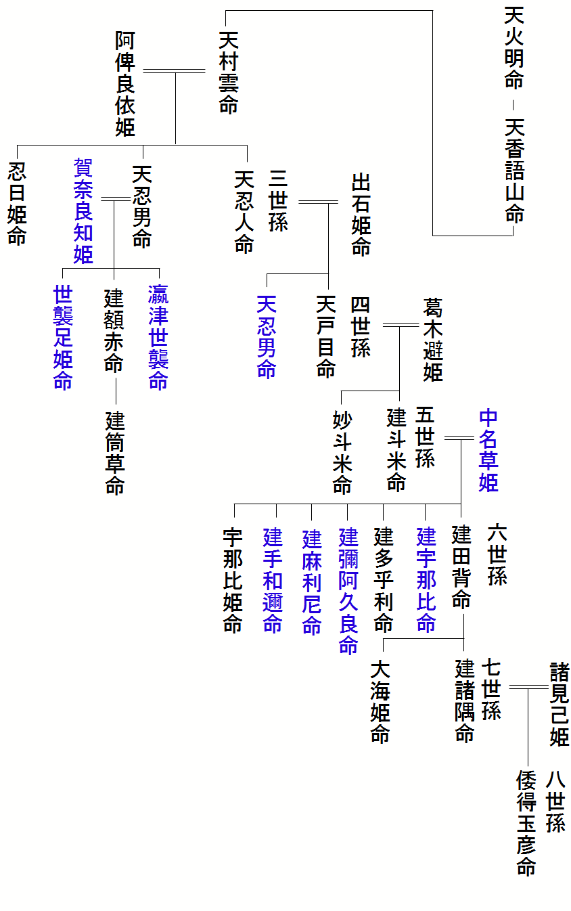
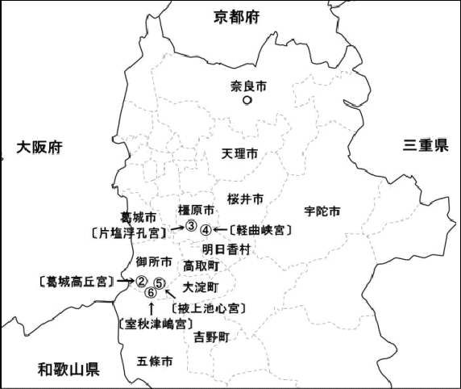

| 『勘注系図』を読み解く (日本史) | |
| 桂川光和 | |
| katsuragawa mitsukazu (2016) | |
『勘注系図』を読み解く
第一章 最奥の秘記
（１）「最奥之秘記」に何が記されるのか
京都府の日本海側、宮津市（みやずし）に日本三景の一つとして有名な天橋立（あまのはしだて）がある。その天橋立が参道のように延びた北の端に、籠神社（このじんじゃ）という古い神社がある。その宮司家である海部氏（あまべうじ）に二つの古い系図が伝わる。略称『勘注系図』（かんちゅうけいず）と『本系図』（ほんけいず）である。共に国宝に指定されるが、歴史史料として興味深いのは『勘注系図』である。
『勘注系図』の末尾に「今ここに相傳（あいつたえ）以て最奥之秘記（さいおくのひき）と為す。永世相承（えいせあいうけたまわって）、不可許他見（たけんゆるすべからず）」とする。
また「海神の胎内に安鎭（やすめしずめ）もって極秘」ともする。「最奥之秘記」という極秘系図として伝えられてきたものである。
「不可許他見（たけんゆるすべからず）」とするから、自分たちのために書かれた系図である。そこには系譜上の人物名のみならず、膨大な注記が書き加えられている。
江戸時代、天下の副将軍と称された水戸光圀（みとみつくに）が、『大日本史』を編纂するにあたり、この系図を見たいと申し入れた。だが海部氏は断ったという。それほどまでにして秘匿（ひとく）しなければならなかった、この系図に何が書かれているのかである。
そこには多くの日本古代史研究者が挑み未だ解き明かすことの出来なかった、卑弥呼や邪馬台国の謎を解き明かす鍵が潜んでいたのである。
（２）勘注系図とはどんな系図か
『勘注系図』の正式な名を『丹波國造海部直等氏本記（たんばのくにのみやつこあまべあたえとううじほんぎ）』とする。系図としては我が国における最も古い時代の成立であろう。
「勘注（かんちゅう）」とは、調べて注を記すという意味である。現存する『勘注系図』は戦国時代か、江戸時代の初め頃、海部勝千代（あまべかつちよ）という人が書写した物である。大きさ縦約六十数センチの楮紙（こうぞし）十枚に、膨大な人名とその人物に関係する事績などを記す。
系図の続き具合に混乱もあり、その内容を理解することは容易ではない。系図の最後は八〇〇年代の人で終わる。始祖とされる人物の年代は定かではないが、世代数から数えると一世紀初めころという事もあり得る。
前半は京都府の日本海側、丹波（たんば）と称された地域の支配者の系図である。
三〇〇年代の中ごろ、大和朝廷が地方支配の長とする、国造（くにのみやつこ）となる。しかし七百年代になって、律令体制（りつりょうたいせい）という中央集権化の中で、国造の称号を失い、以降は籠神社（このじんじゃ）の神官家となる系図である。
系図は始祖を天火明命（あめのほあかりのみこと）とする。天火明命は天照大神（あまてらすおおみかみ）の児、天忍穂耳命（あめのおしほみみのみこと）の児とされる。天皇家の祖先とされる瓊瓊杵尊（ににぎのみこと）の兄とされる人物である。このように神代まで遡る系図である。 『勘注系図』は最奥之秘記として海部氏が、千年以上に渡って隠し続けて来た系図であるが、昭和五一年国宝に指定され、平成四年『神道体系古典編一三』に活字化されて収録された。これにより誰でもその内容を知ることができる系図となった。
一方『勘注系図』と同じ系譜を伝える『本系図（ほんけいず）』と称される系図がある。『本系図』は、朝廷の提出命令に従って作成された系図である。こちらは当主の名前を書き連ねるだけの簡略な系図で、しかも系図の一部を大きく欠落させる。この欠落する箇所は不明であったわけではない。意図的に記さないのである。
そこに大和朝廷が正史とする『日本書紀』などに記される天皇系譜とは相いれない記述がある。そのことが危険であり「最奥之秘記」として、命がけで隠さねばならなかったのである。それではそこに何が記されているのかである。
（３）『勘注系図』とよく似た尾張氏系譜
『勘注系図』とよく似た系譜がある。『先代旧事本紀』という史書に収録される、尾張氏の系譜である。こちらは図ではなく文章で綴られる。
先祖からの関係を記した物が、譜と称されるものである。その関係を線などで示し図にしたものが系図。関係を文章で示したものを、文章系譜または、単に系譜と称す。尾張氏系譜は文章で綴られた文章系譜である。
この二つの系譜の前半部分は、共に初代を天火明命として、前半部分は部分的に同じであるが、一部は傍系の系譜という不思議な関係にある。
全体としては『先代旧事本紀』の尾張氏系譜の方が明快である。ただし『勘注系図』には、登場人物の事蹟などを記した書き込みも多く、史料としては極めて貴重である。
右『勘注系図』左 尾張氏系図

（黒字は双方の系譜に登場する名前、青字は一方のみに登場する名前）
二つの系譜が同一の伝承を伝えるのは、次のような理由による。
『勘注系図』の前半部分は、丹波と称される地域の支配者の系図である。古い時代丹波の支配者は、葛城高尾張（かつらぎたかおわり）に居た、尾張氏なのである。そのために尾張氏の当主が、丹波の系譜である『勘注系図』の中に当主として登場する。
葛城高尾張とは、現在の奈良県御所市近辺である。
この葛城の尾張氏から、四世紀の始めころ乎止与命という人が、現在の愛知県に移り、東海地方の有力豪族となる。したがって『先代旧事本紀』に収録される尾張氏系譜は、この愛知県に移った尾張氏の系譜である。また『勘注系図』もこの愛知県に移った後の、尾張氏系譜の一部を、丹波の系図の中に記す。そのため系図の世代数や続き具合に一部混乱がある。
『勘注系図』と、この尾張氏系図を相互に比較することによって、一方の系譜のみでは解らなかったことが見えてくる。
それでは『先代旧事本紀』尾張氏系譜や『日本書紀』そして『古事記』などを参照しながら『勘注系図』を読み解いでみる。
第二章 始祖天火明命に始まる系図
（１）始祖天火明命
『勘注系図』は始祖を彦火明命とする。
『先代旧事本紀』尾張氏系譜と同じである。彦火明命、児天香語山命、孫天村雲命と続く系譜も同じである。
この天火明命の時代を正確に確定できないが、籠神社に火明命が持ってきたとされる、息津鏡（おきつかがみ）、邊津鏡（へつかがみ）が伝わる。
息津鏡は後漢時代の初め、おおよそ一世紀の中ごろの鏡とされる。邊津鏡は、前漢時代の鏡でより古い。もし天火明命が持ってきた鏡という伝承が史実なら、この火明命の時代は一世紀の半ばを、大幅にはさかのぼらない。天火明命はおおよそ一世紀中頃の人であろうか。
問題は彦火明命を櫛玉饒速日命（くしたまにぎはやひのみこと）とすることである。
櫛玉饒速日命という人物は物部氏の始祖となる人物でもある。彦火明命と櫛玉饒速日命を同一人物であれば、櫛玉饒速日命を始祖とする、物部氏と同祖となる。
しかし私は、尾張氏や海部氏の始祖天火明櫛玉饒速日命と、物部氏の櫛玉饒速日命は別人と考える。ただし古くは同族であろう。
理由は物部氏の宇摩志麻治（うましまじ・可美眞手）は神武時代の人である。同じく『勘注系図』が三世孫とする、倭宿禰（やまとのすくね）も神武時代の人である。
海部氏の始祖彦火明は倭宿禰の三世代前。これに対し、物部氏の祖、天火明命、亦の名饒速日は宇摩志麻治は一世代前である。同一人物とするには無理がある。
したがって私は次のように推測する。
火明という名前は、『日本書紀』などでは天忍穂耳尊（あめのおしほみみ）の子、瓊瓊杵尊（ににぎのみこと）の兄と、瓊瓊杵尊の子の、二箇所に出てくる。
したがって瓊瓊杵尊の兄が海部氏の祖、彦火明命。瓊瓊杵尊の子、火明命が物部氏の祖。すなわち饒速日ではないかと推測する。
次は天火明命の児、天香語山（あめのかごやま）命についてである。
興味深い記述として、天香語山命は天火明命と大己貴神（おおなむちかみ）の女、天道日女（あめのみちひめ）命との間に生まれた子とする。出雲との関係がうかがわれる。
またこ の人の別名を、高志（こし）神彦火明命とする。高志は越（こし）で現在の新潟あたりの古い呼名である。
新潟県西蒲原郡弥彦村（にしかんばらぐんやひこむら）に弥彦神社という越後国一宮がある。祭神は天香語山命で、越後開拓の祖神とされる。天香語山命の伝承は新潟県に多い。
また系図の最初の部分で次のように記す。
天香語山命が丹波に至った時、この地の人たちが祭っていたのは豊宇氣大神（とよけのおおがみ）であったとする。豊宇氣大神とは現在の伊勢神宮外宮の祭神である。
五世紀後半の雄略（ゆうりゃく）天皇の時代、豊宇氣大神は丹波から伊勢へと鎮座地を移すのである。
次は天香語山命の児天村雲（あめのむらくも）命である。天村雲は元は日向に居たとする。後に丹波に移る。日向に居た時娶ったのが阿俾良依姫（あひらよりひめ）命で、この女性との間に生まれたのが天忍人（あめのおしひと）命と天忍男（あめのおしお）命である。尾張氏系譜はこの二人の子孫である。
阿俾良依姫命とは興味深い名である。大和朝廷の初代とされる神武が東征する前、日向にいるときに娶ったのが吾平津姫（あいらつひめ）である。世代的には一世代くらい違うと思われるが、おそらく二人は同族の女性であろう。「あいら」とは、現在の鹿児島県の地名の一つである。神武も天村雲も日向の出である事を裏付ける。
一方天村雲命が丹波に来て娶るのが、伊加里姫（いかりひめ）命でこの二人の間に生まれたのが倭宿禰（やまとのすくね）命である。倭宿禰から笠水彦（うけみずひこ）そして笠津彦（うけつひこ）と続く。この系図が初期の丹波支配者なのであるの。
そして天村雲の弟を、熊野高倉下命とする。
『日本書紀』によれば、神武東征の際、熊野で神武にフツノミタマという神剣を献上する人物として登場する。
『勘注系図』では、高倉下命を天村雲（あめのむらくも）の弟とする。一方『先代旧事本紀』は天香語山命と高倉下は同一人物とする。世代数的には天村雲命の弟くらいの方が、整合性がある。
可美眞手命（うましまで・宇摩志麻治命）
『勘注系図』に、物部氏の人物である可美眞手命が登場する。
可美眞手命の父親、天火明命と、海部氏や尾張氏の祖とする彦火明命とを同一人物とすることによる。
しかし私は、先に述べたように『勘注系図』の彦火明命と、物部氏の天火明命すなわち櫛玉饒速日命（くしたまにぎはやひのみこお）とは世代の異なる別人と考える。
可美眞手命は神武が奈良盆地に侵攻した際、抗戦するが、最後は叔父の長髄彦（ながすねひこ）を斬って神武に帰順する。その後、物部氏は、初期大和王権にあって最も力のある豪族の一つとなる。 『勘注系図』に可美眞手命以降の物部氏系図は記されない。
『勘注系図』の始祖彦天火明命、児天香語山命、孫天村雲までは『先代旧事本紀』尾張氏系譜と良く似るが、まったく同じという事でもない。
たとえば『勘注系図』では、熊野高倉下は天村雲の弟である。一方、尾張氏系譜では、高倉下命は天香語山命の亦の名とする。
このように、二つの系譜は微妙に異なる部分もあり、『勘注系図』と『先代旧事本紀』尾張氏系譜は、それぞれ独自に伝わった伝承である。
この他にも『勘注系図』の冒頭には、始祖伝承ともいうべき相当の量の注記がある。
『記紀』伝承や『先代旧事本紀』の天孫本紀などと、比較して読むと極めて興味深い。しかし、このあたり神代とされる部分で、どこまで史実を反映するか不明である。またその内容の正否を確かめる事も極めて困難である。
次の図は『日本書紀』などの系譜伝承を書き加え、図にしたものである。青字は『勘注系図』には登場しない名前である。海部氏が伝える系図は天照大神につながり、古くは天皇家と同族とする。
（２）神武時代の倭宿禰
『勘注系図』は「倭宿禰は神武の下に参り赴き、祖神から伝えられた神宝を献じ仕え奉る」とする。『勘注系図』のこの記述のみからでは、なぜ倭宿禰が神武に仕えるようになったのか唐突な感じがする。しかし倭宿禰の父、天村雲命の出身地が日向である事を知ると、倭宿禰と神武が同族の人ということが理解できる。
更に興味深いのは『勘注系図』は倭宿禰が大和に居た時、娶った女性を、白雲別（しらくもわけ）の女豊水富（とよみずほ）とする。豊水富のまたの名を井比鹿（いひか）とする。これは神武が奈良盆地へ攻め入る前、吉野で会った、井光（いひか）である。
豊水富を白雲別の娘という伝承は『新撰姓氏録』も次のように記す
『神武天皇、吉野に行幸(い)でまして、神瀬(かみのせ)に到りて、人を遣して、水を汲ましめたまひしに、使者還りていはく、「井に光る女あり」といふ。 天皇、召して問ひたまはく、「汝は誰人（たれ）ぞ」とのたまふ。答へてもうさく、「妾（わらわ）はこれ天より降り来つる白雲別神(しらくもわけのかみ)の女(むす め)なり。名を豊御富(とよみほ)といふ」とまうす。天皇、即ち水光姫(みひかひめ)と名づけたまひき。今の吉野連が祭れる水光神これなり。』とする。この豊御富が倭宿禰の妻である。
また倭宿禰の妹、葛木出石姫（かつらぎいずしひめ）命が、異母兄弟の天忍男（あめのおしお）命の妻。天忍人（あめのおしひと）命の妻は神武が大和朝廷を樹立した時、葛城国造（かつらぎのくにのみやつこ）となった剣根の娘、葛木加奈良知姫である。
したがって尾張氏は、これらの世代あたりから、葛城の地すなわち現在の御所市近辺に住んでいたことになる。
一方『勘注系図』には、倭宿禰（やまとのすくね）について混同が見られる、もうひとりの倭宿禰（やまとのすくね）という人物がある。こちらも神武時代の人物で、こちらの倭宿禰は、元の名を宇豆彦（うずひこ）または椎根津彦（しいねつひこ）と言う。神武が東征の途上、速吸門（はやすいのと）と称された、鳴門海峡で出会い、神武軍に加わった人物である。神武が奈良盆地を平定する際活躍した人物で、その功績により倭国造（やまとのくにのみやつこ）となる。大倭氏（おおやまとうじ）の祖先である。こちらの倭宿禰は、海神綿積豊玉彦（わたつみとよたまひこ）の娘と、彦火火出見（ひこほほでみ）命の間に生まれた建位起命（たけくらきのみこと）の児とされる。『勘注系図』でも彦火火出見命―建位起命―倭宿禰（宇豆彦）という系譜を見る。
しかし『勘注系図』が、天村雲命と伊鹿里姫（いかりひめ）命の児とする倭宿禰とは別人であることは明らかである。
（３）丹波と大和の系譜
『勘注系図』は、倭宿禰―笠水彦命（うけみづひこのみこと）―笠津彦命（うけつひこのみこと）と続ける。
一方『勘注系図』は天忍男命（あめのおしおのみこと）―武額赤命（たけぬあかのみことと）―竹筒草命（たけつつくさのみこと）とする系図と、天忍人命（あめのおしひとのみこと）―天登目命（あまとめのみこと）―建登米命（たけとめのみこと）―建田小利命（たけたおりのみこと）という系譜を記す。
倭宿禰に続く系図は、丹波の系図である。一方天忍男命や天忍人命の系図は、葛城に居た尾張氏の系図である。『先代旧事本紀』尾張氏系譜と同じである。ただし人物の漢字表現が異なる。この事からも二つの系譜は、それぞれ独自に伝わった系譜であり、一方が他方から派生したもので無い事が解る。
『勘注系図』には、 武額赤命の兄弟について記さないが、その兄弟に奥津余曾（おきつよそ）命と世襲足媛（よそたらしひめ）命がある。世襲足媛は五代孝昭天皇の皇后とされる人物である。『日本書紀』で最初に登場する尾張氏の人物でもある。『先代旧事本紀』では世襲足媛命が孝昭の皇后となり、その兄奥津余曾は大連（おおむらじ）として天皇に仕えたとする。大連とは天皇を補佐する大臣を意味する。尾張氏が大和朝廷と深く関わったことを示す。
第三章 宇那比姫命という卑弥呼
（１）丹波の支配者、六世孫建田勢命
次の六世孫に、建田勢（たけだせ）命という人物が登場する。尾張氏系譜では建田背命と表記する。『勘注系図』は笠津彦命―建田勢命と続けるが、一云、として建田勢命を建登米（たけとめ）命之子という別伝も記す。 建登米命之子であれば尾張氏系譜と同じである。 両方の系図に同一人物が登場するのである。当初私はこの意味が解らなかった。後に詳細に二つの系譜を、読み比べることによってその意味を理解した。
古い時代、丹波は葛城に居た尾張氏の支配地なのである。丹波の系図は、尾張氏傍流とも云うべき、倭宿禰― 笠水彦命－
笠津彦命と続くが、六世孫の段階になって、本家とも云うべき尾張氏の建田勢命が、丹波の当主となる。建田勢命は尾張氏の当主であるが、丹波の支配者なのである。したがって尾張氏の系譜にはもちろん、丹波の系図にも当主として登場する。以降七世孫建諸隅命―八世孫日本得魂命と両方の系図に同じ人物が登場する。その後も『勘注系図』は、尾張氏系譜とよく似た系図を続ける。
『勘注系図』はその注記で次のように記す。
「大日本根子彦太瓊【孝霊】天皇御宇、於丹波國丹波郷、爲宰以奉仕、然后移坐于山背國久世郡水主村、故亦云山背直等祖也、后更復移坐于大和國」
建田勢命は最初丹波の宰（みこともち）となる。その後山城久世水主村（やましろくぜみずしむら）に移り、さらにその後大和に戻ったとする。建田勢命が大和王権の命を受けて丹波支配を行ったのである。
建田勢命が丹波支配の府を置いたとされる場所は、京丹後市久美浜町海士（きょうたんごしくみはまちょうあま）である。そこには建田勢命の館跡とされる伝承地がある。またその近くの矢田神社は建田勢命とその子供建諸隅を祀る。
その後山城久世に移り住む。久世とは、現在の京都府城陽市久世である。ここに水主神社という古い神社がある。祭神を彦火明命として、以下尾張氏の人物が祀られる。このあたりが建田勢命が移り住んだ場所であろうか。そしてまた大和に戻ったのである。
（２）六世孫宇那比姫が卑弥呼
私はこの六世孫建田勢命と同じ六世孫に、とんでもない女性を見た。宇那比姫（うなびひめ）命である。六世孫とするが系図の中でどのように続くのか不明である。
この宇那比姫の別名として次のような名前も記す。
天造日女命（あまつくるひめみこと）、大倭姫（おおやまとひめ）、竹野姫（たかのひめ）、大海靈姫命（おおあまのひるめひめのみこと）、日女命（ひめみこと）とする。何れも一人の女性の別名である。
先ず注目されるのは大倭姫（おおやまとひめ）である。
『日本書紀』や『古事記』で、倭（やまと）の名がつくのは、天皇の妃か子供くらいである。中でも大倭（おおやまと）と「大」が付くのは、古い時代の天皇と七代孝霊の妃、意富夜麻登玖邇阿禮比賣（おおやまとくにあれひめ）くらいのものである。
この女性は天皇と同格の、大倭（おおやまと）の名前を持つ。
大倭とは古い時代「大和朝廷」が支配した国の名である。「大倭」が「大和」となり、後に「日本」となる。大倭姫は大和朝廷の女王なのである。
さらにこの人は天造日女命（あまつくるひめみこと）という、尊大な名前を持つ。古い時代、地域支配に当たった長を国造（くにのみやつこ）と言う。天造を国造に対比させれば、国造よりもっと大きな権威を持った名前で「天下人」というような意味である。
そしてまた、大海靈姫（おおあまひるめひめ）という巫女（みこ）姫の名を持つ。『魏志倭人伝』は卑弥呼が「鬼道」に長けていたことを伝える。この人もまた靈姫（ひるめひめ）という宗教的色彩を帯びる。
最後は日女命である。読みは「ひめみこと」であろうが、異国の人がこの音を『卑弥呼』と書き表しても不思議はない。
日女（ひめ）とは後の「姫」「媛」と同じ高貴な女性を指す言葉である。この日女に「命」という尊称がついたのが日女命である。
大倭姫、天造日女命、大海靈姫命、日女命とくれば、この人はまさに『魏志倭人伝』が伝える邪馬台国の女王、卑弥呼である。
（３）宇那比姫は尾張氏の人
私は宇那比姫（うなびひめ）命の別名から、宇那比姫命を『魏志倭人伝』に記される卑弥呼とした。
だが『勘注系図』に宇那比姫という名前を記すが、関係を示す線はない。系図の中でどのようにつながるのか不明である。建田勢命と同世代の人あることが伺われるのみである。
『先代旧事本紀』尾張氏系譜を見て、初めて宇那比姫は尾張氏の人であることが解る。建田背命を長男とする七人兄妹の末の娘である。
宇那比姫は丹波の人ではないが、丹波にとっても特別な人であり、そのために丹波の系図の中にも登場するのである。
『先代旧事本紀』尾張氏系図では、宇那比姫について名前を記すのみで、詳しい事はなにも記されていない。したがって尾張氏系図から卑弥呼を連想するのは不可能である。
『勘注系図』を見て初めて卑弥呼を連想できるのである。
（４）卑弥呼の母親は紀伊氏
『先代旧事本紀』尾張氏系譜によれば、六世孫建田背命や宇那比姫命の父親は、建斗米命（たけとめのみこと）である。
『勘注系図』では建田勢命の父親を笠津彦命とする。だが、「一云建登米命の子」という別伝も記す。
丹波の当主の系譜は笠津彦命から建田勢命へと続くが、これは当主の系譜であって、親子関係にはない。建田勢命は尾張氏の系譜に見る建斗米命の子でる。
建斗米命は、紀伊国造智名曾（きいのくにのみやつこちなそ）の妹の中名草姫（なかなくさひめ）を妻とし、六男一女を生む。
智名曾と言う名前は、紀伊續風土記（きいしょくふどき）、丹生祝家（にゅうはふりけ）系図に、その名を見る。系譜には相違があり、系譜上の位置は不安定である。神武時代に紀伊国造（きいのくにのみやつこ）に任じられた、天道根（あめのみちね）命の二、三世代くらい後の人物と思われる。
これらの伝承が史実であれば、卑弥呼は尾張氏の建斗米命（建登米）と、紀伊氏（きいうじ）の中名草姫命の子ということになる。
卑弥呼の母親は紀伊氏の女性であるが、父親の建登米命は葛木高尾張の人である。したがって卑弥呼は葛木高尾張の人である。
（５）尾張氏の本拠地、葛城高尾張
尾張氏の古い時代の本拠地は、葛城高尾張である。 葛城とは現在の奈良県南西部である。高尾張がどこであるか明確には解りかねるが、おおよそ現在の御所市から葛城市あたりであろう。『日本書紀』は神武の時代に、それまでの高尾張邑を葛城邑としたとする。
尾張氏は葛城氏の女性を多く妻としてる。葛城氏は神武によってこの地域の国造（くにのみやつこ）に任じられた一族である。その葛城氏と尾張氏は婚姻を通じて深い関係にあり、尾張氏の居た場所は、葛城氏の支配地と重なると考える。
尾張氏の子孫が祭る神社がある。葛木坐火雷神社（かつらぎにいますほのいかづちじんじゃ）またの名、笛吹神社である。神社の場所は奈良県葛城市笛吹字神山である。
『勘注系図』は建田勢命の兄弟についてすべてを記さないが、宇那比姫の他に、建田小利命（たけたおりのみこと）という人物を記す。
尾張氏系譜では建多乎利（たけたおり）命と表記して、笛連（ふえふきのむらじ）等の先祖とする。建田小利命に至る系譜は尾張氏系譜と同じである。
したがって勘注系図で傍系の系譜として記される、建田小利命や建筒草（たけつつくさ）命に至る系譜は尾張氏の系譜である。
尾張氏やこの丹波の系譜である『勘注系図』以外に、建多乎利命が登場する系図がある。
笛吹神社の宮司家である持田家の系図である。この系図も祖神を天火明命の児、天香語山命として系譜の中に建多乎利命の名を見る。
この笛吹神社裏山に、笛吹神社古墳とよばれる古墳群が存在する。そこに建多乎利命の墓という伝承を持つ古墳がある。
神社裏手の一番大きな横穴式古墳を、建多乎利命の墓とする伝承が在る。石棺の年代からこれは、建多乎利命の時代のものではないが、その奥に続く尾根上に、数基の円墳が存在する。その一つが、建多乎利命の墓という可能性は十分ある。
建多折命は私が卑弥呼とする宇那比姫命の三番目の兄である。このあたりも尾張氏の住んでいた場所であろう。
第四章 系図に登場する台与
（１）七世孫建諸隅は丹波大縣主由碁理
七世孫に建諸隅命（たけもろずみのみこと）と云う人物が記される。その注記は次のように記す。
『 亦云、建日潟命 亦名彦由麻須命亦云 建日方命 一云、丹波縣主由碁理命 母葛木高田姫也』
ここで最も注目するのは建諸隅命の亦の名を、『丹波縣主由碁理命（たんばのあがたぬしゆごりのみこと）』とすることである。
丹波縣主由碁理命という人物は『古事記』に登場する。
九代開化天皇の妃になった竹野媛（たかのひめ）の父親の名である。『古事記』は、竹野比賣を旦波の大縣主、名由碁理の女（むすめ）とする。
『勘注系図』は、建諸隅命のまたの名を由碁理をとする。丹波の支配者の系譜に、由碁理が登場しても不思議はない。建諸隅命を由碁理とする『勘注系図』の記述は間違いなかろう。開化の妃になった竹野姫は由碁理の娘であるから、建諸隅命の娘が、開化の妃なのである。
更に『勘注系図』の注記は、建諸隅命が、開化の時代に、丹波国の丹波郡（たんばのこおり）と余社郡（よさのこおり）を割いて、竹野姫の屯倉（みやけ）を置い たとする。そして建諸隅命は開化に仕えたとする。
建諸隅のまたの名を竹野別といい、後に竹野が郡（こおり）の名前になったとする。
和名抄に記載される竹野郡（たかのこおり）は、現在の京丹後市網野町、弥栄町（やさかちょう）、丹後町あたりでその中心は丹後町とされる。丹後町は由碁理が国府を置いたと言う伝承の地でもある。
開化の妃に成った竹野媛（竹野姫）というその名前は、竹野別（たけのわけ）という父親の名に由来する。この竹野姫のもとの名は天豊姫（あまとよひめ）命である。この天豊姫命という名が注目される。
（２）八世孫天豊姫は台与（とよ）
七世孫建諸隅命について注記は次のように記す。
『此命娶大諸見足尼女諸見己姫、生日本得魂命、次生 大倭姫命（一云、次生依網吾彦男垂見宿禰）矣』
建諸隅命が大諸見足尼（おおもろみすくね）の女（むすめ）諸見己姫（もろみこひめ）を娶り日本得魂（やまとえたま）命、と大倭姫（おおやまとひめ）命を生んだとする。大諸見足尼とは、葛城国造であり諸見己姫はその娘である。ここにも大倭姫命という大和朝廷の最高権力者の名が登場する。そしてこの女性の本来の名は天豊姫（あまとよひめ）命である。
『魏志倭人伝』は、卑弥呼の後に男子の王が立ったが、国中が服さず戦乱に陥ったとする。その後、十三歳の宗女台与（とよ）を王となして、国が定まったとする。
天豊姫命は台与に通じる。天（あま）は一族に冠せられる姓とも言うべき部分で、名前は豊（とよ）である。『魏志倭人伝』が伝える台与（とよ）と一致する。そして台与は倭国の女王であり、建諸隅命の娘もまた、大倭姫命という大和朝廷の女王の名を持つ。
建諸隅は、私が卑弥呼とする宇那比姫の甥である。したがってその子供の天豊姫は、宇那比姫と同族の女性で、まさに宗女でもある。

天豊姫命こそ卑弥呼の後に、歳一三歳で邪馬台国の女王に擁立された台与である。
更に建諸隅命とは、由碁理であるから、天豊姫命は開化の妃になった竹野媛でもある。
したがって『魏志倭人伝』の伝える台与は、建諸隅命の娘、天豊姫命であり、開化の妃になった竹野媛でもある。
この竹野姫命の母親は、葛城氏の諸見己姫（もろみこひめ）である。
古事記は竹野姫を、丹波の大縣主由碁理の娘とする。したがって私は当初、竹野姫命は丹波の生まれと思った。しかし母親は葛城氏で、父親、由碁理は丹波の大縣主であるが、尾張氏の当主でもある。したがって竹野姫、すなわち『魏志倭人伝』が伝える台与は、大和葛城の出身である。
（３）建諸隅の妹、大海姫命
もう一人この建諸隅命の妹に、注目される人物の名が記される。
小さな字の書き込みであるが、大倭久邇阿禮姫命（おおやまとくにあれひめのみこと）である。『古事記』の意富夜麻登玖邇阿禮比賣命（おおやまとくにあれひめのみこと）と同一人物である。七代孝霊の妃となって倭途途日百襲媛(やまとととひももそひめ）を生んだとされる女性である。
『日本書紀』では倭国香媛（やまとのくにかひめ）とする。『日本書紀』と『古事記』は、またの名を蠅伊呂泥（はえいろね・はえ某姉）とする。しかし私は大倭久邇阿禮姫命と蠅伊呂泥とは別人と考える。
次の系図は蠅伊呂泥に至る楽家系図である。大倭久邇阿禮姫命に至る『勘注系図』とは全く異なる。
雅楽などを継承する楽家の系図によると。蝿伊呂泥（はえいろど）と蝿伊呂杼（はえいろちょ）は安寧（あんねい）天皇の孫、和智津彦命の子である。これは『古事記』の系譜と同じである。しかし楽家系図に、意富夜麻登玖邇阿禮比賣命や、倭国香媛という名前は出てこない。また『勘注系図』には、蝿伊呂泥や蝿伊呂杼は見ない。共に孝霊の妃になった人物ではあるが、蝿伊呂泥と意富夜麻登玖邇阿禮比賣命は別人と考えている。
また倭途途日百襲媛は、尾張氏の血を引く女性と思われる伝承がある。
『勘注系図』は、六世孫建田勢命が、丹波から山背（やましろ・山城）久世郡水主村（くせのこおりみぬしむら）に移り住んだとする。久世村とは現在の京都府城陽市久世である。ここに水主神社（みぬしじんじゃ）という神社がある。
水主神社の祭神十座は、彦火明命から始まる、すべて尾張氏（海部氏）の人物である。
そして同じ名前の神社が香川県東かがわ市にある。こちらも名前は水主神社で、祭神は倭途途日百襲姫命である。この神社伝承によれば、倭途途日百襲姫命は七歳の時、戦乱に陥った大和の黒田盧戸（くろだいおと）を出て、八歳の時この地に至り、二十歳頃までこの地で暮らしたとされる。
水主神社という名前の神社は、先の城陽市久世と、ここ東かがわ市水主以外見当たらない。
この二つの神社には深い関係がある。久世の水主神社の祭神から、倭途途日百襲媛は尾張氏に関係する女性であることが解る。その母親、大倭久邇阿禮姫命を建諸隅命の妹は尾張氏の女性とすることに問題は無い。
一方『先代旧事本紀』尾張氏系譜では、建諸隅命の妹を、大海姫命とする。これは『勘注系図』も同じである。
しかし『先代旧事本紀』尾張氏系譜は、この人を崇神の妃とする。だがこのあたり『先代旧事本紀』尾張氏系譜は、明らかに混乱している。
七世孫建諸隅命を、五代孝昭の時代の人として、孝昭の大臣になり仕えたとする。その一方で妹、大海姫命を十代崇神の妃とする。このまま解釈すれば、五代孝昭と十代崇神、が同時代となってしまう。明らかな誤りである。
このような誤りが生まれる理由として、次のような事情がある。海部氏は「あま」とよばれる一族で、大海姫命という名は、その一族の当主の娘の総称でもある。『勘注系図』でも大海姫命という名が複数箇所に登場する。
大倭久邇阿禮姫命も大海姫命であり、崇神の妃になった女性も大海姫命なのである。これが混乱の一つの要因である。
この崇神の妃になった大海姫命については、次の日本得魂命（やまとえたまのみこと）のところで触れたい。
第五章 崇神の時代
（１）八世孫日本得魂命
八世孫に日本得魂（やまとえたま）命という人物が登場する。『先代旧事本紀』尾張氏系譜では倭得魂彦（やまとえたまひこ）命と表記する。
日本得魂命は建諸隅命すなわち由碁理の子供である。
妹は大倭姫命、亦の名を天豊姫命とする。『魏志』倭人伝に記される十三才で倭国の女王に擁立された「台与」である。さらに竹野姫命とも呼ばれ、九代開化の妃に成ったとされる人でもある。
『先代旧事本紀』尾張氏系譜によれば、日本得魂命の妻は淡海国（おうみのくに）の谷上刀婢（たなかみとべ）と、伊賀臣（いがのおみ）の先祖の大伊賀彦（おおいがひこ）の娘の大伊賀姫（おおいがひめ）を妻とする。
倭得玉命の妻の一人谷上刀婢は淡海の出である。淡海とは滋賀県琵琶湖の事である。詳しい場所は不明だが海部氏と淡海とは深いつながりが有る。滋賀県野洲市の三上氏が祀る御上神社の祭神は天御影である。『勘注系図』によれば、三世孫倭宿禰の亦の名が天御陰命である。
また二人目の妻と関係するのは三重県伊賀市西高倉の高倉神社である。高倉神社御由緒によると、祭神は高倉下命（たかくらじのみこと）である。高倉下命は神武天皇東征の功神で、その七代の孫、倭得玉彦命が祖神である高倉下命を祀ったとされる。
これらの伝承から大和王権の支配範囲の一端が推測できる
（２）天照大神を祀る豊鋤入姫
丹波の籠（この）神社には、伊勢神宮祭祀にかかわる元伊勢伝承がある。
『勘注系図』の日本得魂（やまとえたま）命の注記には、そのことに関わる記述がある。注記は次のように記す。
『崇神の壬戌（みづのえいぬ）年春三月、豊鋤入姫命（とよすきいりひめ）、天照大神（あまてらすおおみかみ）を戴（いただ）き、大和国笠縫（かさぬい）の里から、丹波の余社郡（よさのこおり）久志比之眞名井原匏宮（くしひのまないはらよさのみや）に移る。天照大神と豊受大神（とようけおおかみ）を同殿に祀る。そして日本得魂命等が仕えたてまっるとする。丙寅（ひのえとら）年秋七月（四年後）に、また大和国伊豆加志本宮（やまとのくにいずかしもとみや）に遷ったとする。』
次には、偽書とされる神道五部書、倭姫世紀の記述である。
『（崇神）即位六年己丑（つちのとうし）。秋九月倭笠縫邑に、殊（とく）に磯城の神離（ひもろぎ）を立て、天照大神すなわち草薙剣（くさなぎのつるぎ）を遷奉（うつしたてまつる）。皇女豊鋤入姫命（こうじょとよすきいりひめのみこと）に命じ、斎奉（いつきたてまつる）。（中略）
三九年壬戌（みづのえいぬ）。但波（たんば）の吉佐宮（よさのみや）に遷し奉る。これより積（つもる）四年、斎奉る。更に倭国に求めたまう。
この年豊宇介神（とようけのかみ）天降（あまくだり）いまして、御饌（みけ）を奉る。
四十三年丙寅（ひのえとら）。倭国伊豆嘉志本宮（やまとのくにいづかしもとみや）に遷し,八年齋（いつき）奉る。
倭姫世紀によれば、それ以降豊鋤入姫命は天照大神を祀る場所を求めて各地を渡り歩く。
それではなぜ豊鍬入姫命（豊鋤入姫命）は、天照大神を祀る場所を、最初に丹波としたかである。
『日本書紀』はこの豊鍬入姫命の母について二つの異なる説を記す。一つは、紀伊の国、荒河戸畔（あらかわとべ）の女（むすめ）、遠津年魚眼妙媛（とおつあゆまくわしひめ）とする。もう一つは、一云として、大海宿禰（おおあますくね）の女、八坂振天某辺（やさかふるあまいろべ）とする異伝を伝える。
大海とは「あま」と称された尾張氏の当主の名である。この大海宿禰とは日本得魂命であろう。『勘注系図』ではこの日本得魂命の子供として葛木高千名姫命として、またの名を、八坂振天伊呂邊とする。『日本書紀』が別伝として伝える大海宿禰の女、八坂振天某辺である。
そして『勘注系図』の注記は、日本得魂命が『豊鋤入姫命のために、地口御田をたてまつり、さらに校倉（あぜくら）を建てて穀実を蔵す。ゆえに名を阿勢久良尊（あぜくらのみこと）といい、その倉を御田口の祠（ほこら）と称した』とする。
日本得魂命の娘が八坂振天伊呂邊で、孫が豊鍬入姫命である。日本得魂命は孫娘のために御田をたてまつるのである。
この御田口の祠とは、京都府舞鶴市朝来中の田口神社とされる。田口神社の主祭神は豊受大神で、相殿に日本得魂命が祀られる。
また豊鍬入姫命が天照大神を祭る場所を、丹波に求めた理由は、丹波は尾張氏の支配地であったからである。
（３）伊勢神宮外宮の起源伝承
『勘注系図』には、もう一つ外宮の起源伝承にかかわる記述がある。外宮の祭神は豊受大神（とよけおおかみ）である。
「雄略の時代に匏宮（よさのみや、現在の籠神社）から伊勢の国、度会郡（わたらいのこおり）山田原に遷した」とする。
外宮に伝わる『止由気宮儀式帳』にも似た伝承が記される。
雄略天皇の夢枕に天照大神が現れ「自分一人では食事が安らかにできないので、丹波の国比沼真奈井（ひぬまのまない）にいる御饌（みけ）の神、等由気大神（とよけのおおかみ）を近くに呼び寄せなさい」と言われたので、丹波国から伊勢の国度会に遷し祭ったとする。
この豊受大神について『勘注系図』は冒頭の天香語山命と、その母の問答の中で次のように記す。
『この国豊受大神の在るところの国なり。故に大神（天照大神）を斎奉（いつきたてまつ）らず』とする。天香語山命が丹波に来た時、丹波は豊受大神を祀る人たちの国であったとする。天香語山命たちが丹波にやってきて天照大神を祭って国を造ったとする。
その後、豊受大神と天照二つの神が祭られていたようである。
そして雄略の時代になって、天照大神が祭られる伊勢に、豊受大神も遷し祭られたのである。
先の豊鋤入姫が天照大神を祭る場所を求めて大和の笠縫村から丹波の久志比眞名井原に至り、四年間、天照大神を匏宮（ひさごのみや）に祭る。その後再び大和国伊豆加志本宮（やまとのくにいずかしもとみや）に遷ったとする。『勘注系図』のこの部分の伝承と神道五部書『倭姫世紀』の伝承は同じである。
また雄略の時代豊受大神を山田原に移し祀ったという伝承は、『止由気宮儀式帳』の伝承とも一致する。
神道五部書を偽書とする人たちは、伊勢神宮の外宮を祀る渡会氏が、内宮に対抗するために、鎌倉時代に創作したとする。
しかし『勘注系図』は平安時代の初期、仁和年中（八八五～八八九）に完成している。鎌倉時代の創作文章が、平安初期に作成された『勘注系図』に、まぎれ込むことなどありえない。
少なくとも『倭姫世紀』や『止由気宮儀式帳』のこの部分は、鎌倉時代の創作ではない。古くからの伝承にもとづくものであろう。
共に伊勢神宮の起源に関わる興味深い伝承である。
（４）陸耳御笠と戦った日本得魂命
『勘注系図』八世孫日本得魂命の注記で次のように記す。
「崇神の時代当国の青葉山中に土蜘（つちぐも）あり。陸耳御笠（くがみみのみかさ）の者、その状（さま）人民（おおみたから）を賊（ぬすむ）。ゆえに日子坐王（ひこいますのきみ）勅（ちょく）をたてまつりこれを伐（う）つ。時にこの命等仕えたてまつる。余社之大山（よさのおおやま）に到り遂にこれを誅（ちゅう）す。」
青葉山は福井県高浜町と京都府舞鶴市との境に位置する。若狭と丹後との境でもある。
『勘注系図』が記す、この伝承は丹後風土記残欠と同様の伝承でもある。丹後風土記残欠の成立年代や、経緯についてはつまびらかでないが、この戦いの様子を詳細に記す。
日子坐王や日本得魂命（やまとえたまのみこと）達と戦った相手は、陸耳御笠と、匹女（ひきめ）とよばれる一党で、場所は青葉山から由良川のほとりである。
日子坐王が陸耳御笠を討った伝承は『古事記』にも記される。崇神の時代の事として『日子坐王者を旦波国に遣わし玖賀耳之御笠（くがみみのみかさ）を殺すを命ず。』とする。
日子坐命という王権の皇子が、直接戦闘を指揮している。大和王権はここ若狭から東の勢力と対峙していたのである。
この陸（くが・玖賀）こそ『魏志』倭人伝が伝える、邪馬台国と激しく争っていた、狗奴国に他ならないと考えている。
したがって卑弥呼の時代から続いていた狗奴国との戦いは、崇神の時代おおよそ三世紀後半の半ばに、大和朝廷側の勝利で決着が着くのである。
（５）系譜の接続を誤る川上眞稚命
話の順序として『勘注系図』の世代順序と異なるが、十四世孫として川上眞稚（かわかみまわか）という人物が登場する。『勘注系図』はここで大きな誤り犯す。
十一世孫に小登與（おとよ）命という人物が登場する。これは尾張氏系譜の十一世孫乎止與命と同一人物である。この人は葛城高尾張から、現在の愛知県に移り住んだ人物である。東海地方の愛知県あたりを本拠とする尾張氏の祖である。
『勘注系図』は十四世孫川上眞稚を、現在の愛知県に移り住んだ尾張氏の系譜に接続する。そのため世代数と系譜の続き具合が混乱する。
九世孫の意富那比（おおなび）命以降、系図の縦線は複雑に錯綜する。だが『先代旧事本紀』の尾張氏系譜とほぼ同じ系譜を伝える。ともに十世孫乎縫（おぬい）命、十一世孫小登與命（乎止與命）、十二世孫建稲種（たけいなだね）命、十三世孫志理津彦（しりつひこ）命と続く。『勘注系図』ではこの十三世孫志理津彦命の後に、十四世孫川上眞稚（かわかみまわか）命を続ける。しかし十一世孫小登與命から十三世孫志理津彦命に至る人物は、もはや丹波の系譜ではない。東海地方に住み後に尾張氏となる系譜である。
一方十四世孫川上眞稚命が住んだのは、現在の京丹後市久美浜町須良（すら）である。
川上眞稚は川上麻須（かわかみます）あるいは河上麻須良（かわかみますら）とされる人物である。
『丹後舊事記（たんごくじき）』では「開化・崇神・垂仁の三朝熊野郡川上庄須郎の里に館を造る。丹波道主（たんばみちぬし）命は麻須良女（ますろめ）を娶る」とする。
崇神の時代、四道将軍の一人として丹波に派遣されたのが、丹波道主命である。
丹波道主は河上麻須の子、河上麻須郎女（かわかみますろめ）を娶る。その子供の一人が垂仁の妃に成る日葉須姫（ひばすひめ）命で、景行の母である。
『勘注系図』では川上眞稚を、碁理（ゆごり）の子とする。また八世孫日本得魂彦命のところで、日本得魂彦命の亦の名を川上眞若とするが、同一人物とするのは誤りであろう。共に由碁理の子で異母兄弟くらいであろう。
興味深いのは川上眞稚の妹として、竹野媛とう名を記し、その人を大比昆（おおひこ）命妃とする。竹野媛という名は父親竹野別（たかのわけ）による。竹野別という由碁理の子でもある。
この大比昆命が『記紀』伝承に登場する四道将軍の一人、大彦命であればやはり崇神時代の人である。
また川上眞稚が 開化・崇神・垂仁の三朝に熊野郡に館を造ったとする『丹後舊事記』とも矛盾しない。これらの事から、『勘注系図』が川上眞稚を十四世孫として志理津彦命に続けるのは誤りである。八世孫とするべきであろう。したがって『勘注系図』の世代数はこの後大きく狂う。
『勘注系図』ではこれ以降、系図に記される当主を葬った場所を記す。川上眞稚を竹野郡将軍山、一云熊野郡甲山（くまのこおりかぶとやま）に葬ったとする。
甲山（かぶとやま）とは久美浜湾のほとりにそびえる美しい兜の鉢をした兜山（かぶとやま）の事である。川上眞稚はこの山に葬られたとするのである。
この兜山の山頂に熊野神社が祭られる。この神社は日葉須姫が垂仁の妃に成った時、河上麻須（川上眞稚）が建立した神社とされる。
『勘注系図』は九世孫以降、十四世孫とする川上眞稚まで大きく混乱する。そしてこの川上眞稚以降は再び丹波の系譜となるが『先代旧事本紀』尾張氏系譜との相互比較はできなくなる。
（６）丹波に派遣された丹波道主
日本得魂（やまとえたま）命の妹は、大倭姫命亦の名を天豊姫命とする。『魏志倭人伝』の十三才で邪馬台国の女王に擁立された台与である。
天豊姫は竹野姫命とも言い、九代開化の妃でもある。
二六六年西晋に朝貢した倭国の女王は台与（とよ）、すなわち天豊姫命であろう。この時、同時に西晋の爵位を受けた男王がある。天豊姫命は竹野姫で開化の妃であるから、この男王は開化に他ならない。
このことから欠史八代とされ多くの研究者が実在しない天皇とする、開化の実年代がほぼ確定するのである。
そして日本得魂命は開化の皇子、彦坐王（日子坐王）に従って陸耳御笠を討つ。時代は崇神の時代である。
大和朝廷はようやくこの時点で、陸国（くがこく）すなわち狗奴国に勝利する。
開化が西晋の爵位を受けたのは二六六年である。したがってその子供、彦坐王が狗奴国と戦うのは崇神の時代であり三世紀の後半である。
崇神の時代になり、大和朝廷は長年にわたって敵対してきた陸国（くがこく）に勝利し、国内では武埴安の乱を抑え、王権の安定を獲得する。
そこで支配地域の拡大を図るために北陸、東海、西道、丹波に四道将軍と称される人たちを派遣する。
その一人、丹波に派遣されたのが丹波道主である。 三世紀末の事である。
『勘注系図』に彦田田須美という名前を見る。ただし『勘注系図』からは彦田田須美がどのような人物か何も知りえない。
これは『古事記』が比古多多須美知能宇斯王(ひこたたすみちのうしのみこ)とする丹波道主王のことである。
丹波には道主命にかかわる伝承を数多く残す。道主が府を置いた場所は京丹後市峰山町で船岡神社の場所とされる。近くに比沼麻奈為神社（ひぬまないじんじゃ）という、豊受大神を祭る古い神社がある。道主の子、八乎止女（やおとめ）が比沼麻奈為神社の斎女となったとされる。
五世紀後半、雄略天皇の時代、この比治真名井原の比沼麻奈為神社から、豊受大神を伊勢山田原に移し祀ったのが伊勢神宮の外宮とされる。
丹波道主がこの地で娶ったのが、川上麻須（かわかみます・河上麻須）の子川上麻須郎女（かわかみますのいらつめ）で五人の娘が在ったとされる。その内の一人が日葉須媛（ひはすひめ）で、垂仁の妃に成って、十二代景行を生んだとされる。
この時代から丹波支配において尾張氏の影が薄くなる。丹波は大和王権の直接支配地に組み込まれたようである。
（７）太刀一千口を作った川上眞稚
四世紀、大和王権の鉄素材入手や加工は丹後の豪族に依存していたと考えられる。
『記紀』は垂仁時代皇子の五十瓊敷命（いにしきみこと）が一千口の剣を作ったことを記す。この作刀に携わったのが川上部（かわかみのとも）である。この川上部は丹後の集団で、彼らこそ大和朝廷の鉄の入手と加工の担い手であった。
『日本書紀』垂仁紀は次のように記す。
三九年冬一〇月、五十瓊敷命（いにしきみこと）、茅淳（ちぬ）の菟砥（うと）川上宮（かわかみのみや）に坐（いまし）て、剣一千口を作る。よりて其の剣を 名づけて川上部（かわかみのとも）という。亦の名は裸伴（あかはだがとも）という。石上（いそのかみ）神宮に蔵（おさ）む。この後に、五十瓊敷命に命じ、 石上神宮の神宝を主（まつ）らしむ。
また一に云うとして、
五十瓊敷命は、茅渟の菟砥の川上に坐（いま）して、河上という名の鍛（冶）を呼び太刀一千口を作らしむ。後略・・・。
また『古事記』は次のように記す。、
印色入日子命（いにしきいりひこのみこと）・・・中略・・・鳥取の河上の宮に坐て、横刀一千口を作るを令（めい）す。是を石上神宮に奉納。即ちその宮に坐して川上の部（とも）を定めるなり。
そして『勘注系図』は古本系云うとして次のような伝承を記す。
一に云う。倭宿禰、またの名大熊野命、またの名大振熊、またの名川上眞若命、またの名倭得玉彦命（やまとえたまのみこと）、五十瓊敷入彦の御子、大足彦 （おおたらしひこ）天皇（十二代景行）の御宇、茅淳菟砥川上宮に坐して、宝剣を作るを令す。是を石上神宮に献じ、以って奉仕いたす。川上部の祖なり伝伝。
ここで登場する、川上眞若命は川上麻須で、久美浜湾の傍にそびえる甲山に熊野神社を祭った人物である。したがって大熊野、大振熊とも呼ばれたのであろう。その川上眞若（稚）が宝剣を作ったという伝承である。
『記紀』と『勘注系図』の記述は若干異なる。前者が垂仁の時代で、後者は景行の時代とする。若干の違いはあるが、後に川上部と呼ばれる者たちが、垂仁の皇子、五十瓊敷命の命を受けて剣を作ったという伝承は一致する。
書記の本文は裸伴（あかはだがとも）を、剣の名とするが、鉄を加工するために灼熱の中、裸で作業する事から生まれた、剣を作った集団の名である。
一千口の剣とは少ない数ではない。『記紀』と『勘注系図』の記述から、丹後の豪族が大和朝廷の鉄の入手や加工に深く関わっていた事が読み取れる。
一方近年の発掘によって丹後が弥生中後期を通じ、有数の鉄保有地であった事が知られるようになった。
京丹後市弥栄町奈具丘（やさかちょうなぐおか）遺跡からは、鉄の交易品となる水晶玉を作る玉造工房跡や、鉄製品を作った際の切れ端が出土している。
奈具丘遺跡は弥生中期後半の遺跡で、この地域が早くから鉄素材の入手と加工に関わっていた事を物語る。
また京都府与謝郡岩滝町（よさのこおりいわたきちょう）、大風呂南1号墳墓は11本の鉄刀を副葬していた。墳墓の築造はおおよそ西暦２００年前後で、同時代の鉄器の副葬量としては最大数を誇る。
これらの発掘事例は、丹後の豪族が大和王権の鉄資源の入手と加工を担っていた、という私の説を裏付ける。
第六章 尾張氏に続く系譜
（１）九世孫意富那比命
『勘注系図』はこの九世孫あたりから「一云」「亦云」などとして膨大な数の名前を記す。同時に人物同士の関係を示す線は複雑さを増し、どのような関係に在るのか簡単には理解できない。
系図作成者自身の混乱や錯誤が見受けられる。ただしこのあたりは『先代旧事本紀』の尾張氏系譜との比較が可能である。『勘注系図』を読み解く手がかりになる。
『勘注系図』には九世孫として、乙彦命（おとひこのみこと）、日女命（ひめみこと）、玉勝山背根子命（たまかつやましろねこのみこと）、若津保命（わかつほのみこと）置津世襲命（おきつよそのみこと）、意富那比命（おおなびのみこと）、葛木高千名姫命（かつらぎたかちなひめのみこと）が記される。
『先代旧事本紀』尾張氏系譜にも、弟彦命、日女命、玉勝山代根古命、若都保命、置部與曾命（おきべよそのみこと）が記される。置津世襲命と置部與曾命は「津」と「部」が異なるが同一人物であろう。
『先代旧事本紀』には意富那比命と葛木高千名姫命の名は見当たらないが、代わりに彦與曾命（ひこよそのみこと）の名を見る。どちらも小縫（おぬい・乎縫）命の父親とするから意富那比命と彦與曾命は同一人物であろう。
葛木高千名姫命を『先代旧事本紀』には見ないが、『古事記』は葛城之高千那毘賣（かつらぎたかちなひめ）を意富那比命（おうなびのみこと）の妹とする。八代孝元の児、比古布都押之信命（ひこふとおしのまことのみこと）の妃とする。
このあたり正確な事は解りかねるが、比古布都押之信命の妃になった葛木高千名姫と崇神の妃に成った、葛城高名姫命という人物が在ったと考える。
この日本得魂命の子とされる意冨那比命―乎縫（おぬい）命―小登與（おとよ）命と続く系譜は、尾張氏の系譜である。十一世孫小登與命（乎止與）が愛知県に移り後の尾張氏へ続くのである。
丹波の支配者の系譜である『勘注系図』はこの後、尾張氏の系譜を混在させる為に、系譜の続き具合や世代数が混乱する。
またこの意冨那比命の世代あたりで、丹波は大和朝廷の直接支配となる。四道将軍の一人丹波道主王が丹波に常駐する。丹波に道主王の伝承は数多く残るが、尾張氏の当主、意冨那比命に関する伝承は、私の知る限り見当たらない。
（２）九世孫日女命
九世孫に日女命（ひめみこと）という女性が記される。尾張氏系譜でも同じ九世孫に日女命の名を記す。
『勘注系図』に卑弥呼を見る人の多くが、この九世孫日女命を卑弥呼とする。
理由はこの人の亦の名として横に記され、倭迹〃日百襲姫に注目するからである。
倭迹迹日百襲姫を卑弥呼とする人は、この九世孫日女命を卑弥呼とするのである。
しかしこの九世孫日女命は倭迹迹日百襲姫ではありえない。
なぜなら『記紀』が伝える倭迹迹日百襲姫の父親は、七代孝霊で、母親は意富夜麻登玖邇阿禮比賣命（おおやまとくにあれひめのみこと・記）または倭国香媛（紀）とよばれる人である。
これに対し『勘注系図』の記す、九世孫日女命の父親は、日本得魂彦命である。また『先代旧事本紀』によれば父親を倭得玉彦命とし、母親は淡海国（おうみのくに）の谷上刀婢（たなかみとべ）である。
『記紀』の伝える倭迹迹日百襲姫の親とは一致しようがない。したがって九世孫の横に小さく書かれた倭迹〃日百襲姫という名は、『勘注系図』作成の時点での考証の誤りである。
『勘注系図』には一云、あるいは亦の名として多くの名前を記す。しかし世代的に見て明らかに誤りと思われる名前も多く、全面的に信じるわけにはいかない。
だがそれらの名前がまったくの創作とも言えないのである。その多くが何らかの関係で海部氏と関係するのである。
倭迹迹日百襲姫の母親、大倭久邇阿禮姫命は七世孫建諸隅の妹である。したがって『勘注系図』という海部氏の系図に、倭迹迹日百襲姫という名前が登場したとしてもまったくお門違いとも云えないのである。しかしこの九世孫日女命が倭迹迹日百襲姫でないことは明白である。
（３）九世孫玉勝山背根子
九世孫とされる玉勝山背根子（たまかつやましろねこ）は山背（山城）の祖とされる人物である。
『勘注系図』は六世孫建田勢命が宰（みこともち）となって丹波に赴いたとする。その後山背の久世水主村（くぜみずしむら）に遷り、更にその後大和に遷ったとする。
久世水主村とは現在の京都府城陽市久世である。ここに水主神社という延喜式に記載される古い神社がある。祭神は彦火明命を始めとして天香語山命、天村雲命、天忍男（あめのおしお）命、 建額赤（たけぬあか）命、建筒草（たけつつくさ）命、建田背命、建諸隅命、倭得玉彦命、山背大国魂（やましろのおおくにたま）命を祀る。まさに尾張氏の一族を祀る。山背大国魂命が 玉勝山背根子である。
そしてこの水主神社には大縫（おおぬい）命と小縫（おぬい）命も祀られる。
新撰姓氏録によると、志賀高穴穂宮（しがたかほのみや・成務天皇）に仕え、糸縫針の職についたが故に子孫に衣縫の氏を与えられたとされる。
十世孫とする大原足尼（おおはらのすくね）命は、成務の時代に筑紫豊国の国造と成ったとされる人物である。
おおよそこのあたりが成務天皇の時代であり、四世紀の中頃である。
『勘注系図』は丹波の支配者の系譜であるが、このあたりになると丹波という地域とは直接関係ない系譜となる。
（４）尾張国造十世孫小止與命
小登與（乎止與・小止與・乎止与）という人物が記される。現在の尾張地方すなわち愛知県に移り住み、のちの尾張氏の祖とされる人物である。
『勘注系図』は小止與を、置津世襲命（おきつよそのみこと）の子として十世孫とする系譜と、乎縫（おぬい）の子として十一世孫とする異なる系譜を記す。 また別の個所では安波夜別（あわやわけ）の児ともする。『先代旧事本紀』でも乎止與命は誰の子か不明である。
乎止與が誰の子か今ひとつはっきりしないが、年代的には四世紀初めの人と思われる。したがって世代的には十世孫くらいと考える。国造本紀でも十世孫とする。
乎止與が住んだ館跡とされる場所がある。愛知県名古屋市緑区大高町火上山１－
３にある氷上姉子（ひかみあねご）神社である。この氷上姉子神社は乎止與の館跡近くに創建されたとされる。
『先代旧事本紀』ではこの乎止與は、尾張の大印岐（おおいみき）の娘、眞敷刀婢（ましきとべ）を妻とし、一男を生むとする。『先代旧事本紀』では一男とするが、『勘注系図』では建稲種（たけいなだね）命と宮簀姫（みやずひめ）命の二人を記す。熱田神宮の伝承などでも、建稲種命は宮簀姫命の兄とされる。
国造本紀によれば乎止與命は成務の時代尾張の国造（くにのみやつこ）となる。
また尾張氏系譜では尾綱根命は譽田天皇（ほむたのすめらみこと）［応神天皇］の御世に大臣と成って仕えたとする。このあたりの世代は、もはや丹波との直接のかかわりはないと思われる。
尾綱根命の妹として尾綱志里都岐刀邊（おつなしりつきとべ）命という女性を記す。
尾張氏系譜では、尾綱根命の妹として尾綱眞若刀婢（おつなのまわかとべ）命として景行の皇子、五百城入彦（いほきいりひこの）命に嫁いだとするが時代が合わない。
また『勘注系図』が、一云うとする針間之伊那比大郎女（はりまのいなひのおおいらつめ）という女性は『日本書紀』などでは、景行の皇后とされる女性でこれも時代が合わない。この女性については『勘注系図』尾張氏系譜共に混乱がある。時代としては応神の時代で四世紀末である。
何れにせよこの人たちは愛知県に移った後の尾張氏系譜の人物である。
（５）日本武尊に従軍した建稲種命
十二世孫として建稲種命（たけいなだねのみこと）という人物が記される。
建稲種命は日本武尊（やまとたけるのみこと）の東国平定に従ったとされる。ところが帰る途中、愛知県の三河湾あたりで水難事故に会い水死する。
建稲種命の妹に宮簀姫（みやずひめ）と云う人物がある。
宮簀姫は日本武尊の妃になったとされる人で、愛知県の熱田神宮は、宮簀姫が日本武尊の形見である草薙剣（くさなぎのつるぎ）を祀つった事に始まるとされる。
そして応神の時代になって建稲種命の遺児、尻綱根（しりつなね）命が、尾張国造となる。
『勘注系図』は、現在の愛知県地方の尾張氏となる系譜を、丹波の支配者の系譜に混在させる。このあたりは愛知県に移った尾張氏の系譜である。
『勘注系図』と尾張氏系譜とは、小登與命、建稲種命、尻綱根命（尾綱根命）までは同じである。
しかしその後に続く知加麻彦（ちかまひこ）命、古利（こり）命、尾綱志里都岐根（おつなしりつきね）命、尾張連弟彦の対応関系は不明である。ただしこの人たちが愛知県に移った後の人物であることは間違いない。
第七章 丹波国造となる時代
（１）丹波大矢田彦命
十五世孫丹波大矢田彦（おおやたひこ）命という人物が記される。
『勘注系図』は十四世孫とする川上眞稚以降、再び丹波の支配者の系譜に戻る。
しかし尾張に移った後の尾張氏の系譜に接続する為、世代数を大幅に誤る。
川上眞稚は由碁理の子であるから、日本得魂命と同じ八世孫であろう。したがって十五世孫とする丹波大矢田彦命も九世孫となる。丹波大矢田彦命は四世紀初め頃の人であろう。
大矢田彦命の亦の名を川上麻須稚郎子（かわかみますわかのいらつこ）とする。川上麻須稚郎子であれば、川上麻須の子である。
崇神の時代、大和朝廷は丹波に丹波道主を派遣する。この道主の妻となったのが川上麻須郎女（かわかみますろめ）である。大矢田彦命の妹、十五世孫川上日女命が川上麻須郎女と思われる。
そして丹波道主と川上麻須郎女の子が、垂仁の妃となる日葉酢媛（ひばすひめ）で、十二代景行の母親とされる。
また大変紛らわしいが、和邇氏の建振熊命の子に大矢田宿禰という人物がある。『勘注系図』には、丹波大矢田彦と大矢田宿禰の混同がある。
（２）丹波國造となる大倉岐命
十六世孫を丹波國造大倉岐命（たんばのくにのみやつこおおくらき）とする。
この人から名前の前に、丹波国造（たんばのくにのみやつこ）という称号が付く。
『勘注系図』の 注記は、成務の時代、大倉岐命が楯と鉾を賜って、丹波国造となったとする。その干支を「癸丑（みずのとうし）年夏五月」とする。
古事記の没年干支を信じれば、成務の没したのは355年である。「癸丑年」を353年とすれば、この年次は事実を伝えているかもしれない。
またその注記に「楯（たて）と矛（ほこ）等を賜り、丹波国造に定め賜う」とする。
これは、『日本書紀』が成務の時代「諸国に（命）令して、国、郡（こおり）の造長（みやつこのおさ）を立て、県（あがた）、邑（むら）に稲置（いなき）を置いた。ともに楯と矛をさずけて表（しるし）とした」とすることに一致する。
『先代旧事本紀』国造本紀もまた次のように記す。
「志賀高穴穂朝［成務天皇］御世、尾張同祖建稲種命四世孫大倉岐命に国造を賜い定めた」とする。国造本紀の記述では、成務時代に国造となったとするのが一番多い。成務の時代になって大和朝廷の地方支配が一通り確立したのである。
ただし大倉岐命を十六世孫とすることには注意が必要である。
前に述べたように、川上眞稚を十三世孫志理都彦命という愛知県地方に移った、尾張氏の系譜に続ける。そのために世代数が三世代ほど多くなってしまう。
大倉岐は、川上眞稚命が八世孫、大矢田彦命九世孫、大倉岐命は十世孫となろう。
『勘注系図』は大倉岐命を加佐郡志楽郷長谷山（かさのこおりしらくのさとはせやま）に葬ったとする。『丹後風土記残欠』でも「長谷山の墓大倉木」とする。加佐郡志楽郷は現在の舞鶴市である。
長谷山とされるのは舞鶴市溝尻長谷山（みぞじりはせやま）である。ここには溝尻古墳群という古墳群が存在する。その一つが大倉岐命の墓である可能性はある。
十六世孫丹波國造大倉岐命に次ぐ十七世孫丹波國造明國彦命については、詳しい事は何も解らない。
（３）建振熊宿禰という和邇氏の人物
十八世孫を丹波國造建振熊宿禰（たけふるくまのすくね）とする。しかし極めて不思議なことである。建振熊という人物は和邇氏の人物である。なぜ和邇氏の人物が丹波國造という海部氏の当主として登場するかである。
先ず一般に知られている建振熊命に至る和邇氏の系図を見てみよう。
和邇氏は、五代孝昭と尾張氏の世襲足媛の子供、天足彦国押人（あまたらしひこくにおしひと）命に始まるとされる。
下に掲げたのは、太田亮（おおたあきら）が『日本姓氏家系大辞典』で参考までとしてあげる和邇氏系図である。武振熊命は和邇氏の人物で『日本書紀』でも和珥臣（わにおみ）の祖とする。
『勘注系図』でもこの和邇氏の系譜を次のように記す。
「又一本云、彦国忍人五世孫大難波命、児大矢田彦命、児大使主命、伝伝、往古よりつたえるところ当氏子細有り、伝伝」とする。
この彦国忍人(ひこくにおしひと）は天足彦国押人（あまたらしひこくにおしひと）で和邇氏（わにし）の祖とされる人である。その五世孫が大難波命。その子供が大矢田彦命、そしてもう一人が日触大使主命(ひふれおおみのみこと)である。これはまぎれもなく和邇氏の系譜でる。だがこの和邇氏との関係は「当氏子細有り」とするが、『勘注系図』が作成された時代には、どのような関係にあるか、詳しくは解らなくなっている。
それではなぜ丹波の系譜に建振熊命という和邇氏の人物が登場するかである。
（４）父と子の建振熊
『勘注系図』の十八世建振熊宿禰の注記に次のように記す。
『息長足姫（おきながたらしひめ・神功皇后）、新羅（しらぎの）国征伐の時、丹波、但馬、若狭の海人三百人を率い水主（みずぬし）と為（な）って以って奉仕（つかえたてまつ）るなり。凱施（凱旋・がいせん）の后（のち）勳功により、若狭木津に高向宮（たかむくのみや）において海部直（あまべあたい）の姓を定め賜う、而（しこう）して楯鉾（たてほこ）等を賜う。
品田天皇（ほむたてんのう・応神）の御宇（みよ）国造（くにのみやつこ）として仕え奉る故に海部直亦（また）云う丹波直、亦云う但馬直（たじまのあたい）なり。』
神功の新羅出兵に関連する極めて具体的な内容である。
系図の建振熊宿禰の横に記される注記を読む限り、新羅（しらぎの）国征伐の時に海人三百人を引き連れて出陣した人物は武振熊宿禰で、その功績により若狭木津に高向宮（たかむくのみや）を定め海部直（あまべあたい）の姓を賜ったと読める。
ところうが事実は少し違うのである。神功の新羅侵攻に海人三百人を引き連れて参戦するのは、父親の建振熊命で若狭木津高向宮で海部の姓を賜るのは、その息子建振熊宿禰なのである。
『勘注系図』の別の個所に、上記の注記と極めてよく似た一文を記す。
次のような注記である。
一云、一四世孫倭宿禰 孫難波根子武振熊命（なにわねこたけふるくまのみこと） 息長足姫 新羅（しらぎの）国征伐の時、但馬、若狭の海人三百人を率い水主（みずぬし）と為（な）って以って奉仕。凱旋（がいせん）の后（のち）勳功により、男（こ）武振熊宿禰 若狭木津に高向宮（たかむくのみや）において海部直（あまべあたい）の姓を定め賜う、而（しこう）して楯鉾（たてほこ）等を賜う。品田天皇の御宇伝伝
当初、私はこの一文は、建振熊宿禰の横に記された注記と同じと思い、安易に読み過ごしていた。
ところうがこの二つの注記は、明確に意味が異なるのである。
後者では、神功の新羅出に、海人三百人を引き連れて参戦したのは、父親の建振熊命である。一方若狭木津高向宮で海部の姓を賜ったのは、息子の建振熊宿禰である。「命」と「宿禰」を明確に書き分ける。また建振熊宿禰の前に「男（こ）」と言う文字を付ける。男とは息子の意味である。ただしこの建振熊宿禰も父親武振熊命と共に新羅の戦に従っている。
息子の建振熊宿禰が、応神朝になって丹波、但馬、若狭にまたがる地域の国造となったのである。その支配の拠点は、若狭木津高向宮（わかさきずたかむくのみや）とされる。現在の福井県大飯郡高浜町である。
そしてこの建振熊宿禰の時代から、丹波の一族は海部（あまべ）と称するようになる。
しかし建振熊宿禰が国造になる前、すでに成務の時代、丹波には大倉岐、但馬には船穂足尼（ふなほのすくね）などの国造が任命されている。
したがって建振熊宿禰はこれらの、国造を支配下に置いた、丹波、但馬、若狭にまたがる、より上位の支配者なのである。それゆえに丹波直であり、但馬直なのである。
和邇氏系図には武振熊宿禰という名を見ない。だが父武振熊命に従って新羅に出陣し、彼の地にとどまった大矢田宿禰という人物がある。『勘注系図』では、大矢田彦命の横に一云、難波根子武振熊宿禰とする。『勘注系図』には大矢田彦命と大矢田宿禰との混同があるが大矢田宿禰が建振熊宿禰である。
武振熊命は大和の和爾、すなわち現在の奈良県天理市和爾（てんりしわに）の人である。一方建振熊宿禰は父親建振熊命と共に、新羅に渡り鎮守将軍として新羅に留まる。後に丹波に帰り応神時代に、若狭木津高向宮で海部直の姓を賜い丹波に住む。
（５）神功皇后の新羅出兵は史実
『勘注系図』は「息長足姫（おきながたらしひめ・神功皇后）、新羅（しらぎ）国征伐の時、丹波、但馬、若狭の海人三百人を率い水主（みずぬし）と為（な）って以って仕奉（つかえたてまつ）るなり」とする。
今日の学説では神功皇后の新羅出兵など、フイクションで史実ではないとする。フイクションなら『勘注系図』が記す、建振熊宿禰が丹波、但馬、若狭の海人を率いて仕奉というのはフイクションで、『勘注系図』そのものの真偽が問われることになる。
はたして神功皇后の新羅出兵はフイクションであろうか。
うら若き身重の神功皇后が、新羅出兵を企て戦いに赴いたというのは創作がある。だが神功皇后の名のもとに、武内宿禰が主導し、建振熊命やその子供、大矢田宿禰（建振熊宿禰）が新羅に攻め入ったのは史実である。
但馬と呼ばれる、兵庫県豊岡市出石町（いずし）町の袴狭（はかざ）遺跡から、四世紀代のものと思われる船団の絵が出土している。杉板に十五、六隻の船が、線刻されている。
画像提供「兵庫県立考古博物館」
舟はいずれも、舳（とも）先が高くせり上がった、外洋船である。船団を組んで航行する様子を描いたと思われる。
四世紀代であれば、漁船団や、商船団であるはずはない。軍船以外考えられない。
これだけリアルな描写は、想像で描いたものではない。実際に船団を見た者が描いている。おそらくこの船団に加わった者が自分達の活躍を絵にしたのであろう。
私はこの船団の絵は、建振熊命や建振熊宿禰が率いた海人三百人の一人によって描かれたと推測する。
『勘注系図』の成立経緯を記した注記によれば、『本系図』は養老五年に成立した『養老本記』に拠るとする。養老五年は七二一年で『日本書紀』が完成したとされる翌年のことである。『勘注系図』の注記はこの神功皇后の出兵を含め、『日本書紀』と密接に関係する。建振熊の活躍は『日本書紀』にも記される。『日本書紀』完成の翌年に、地方豪族にすぎない海部氏が『日本書紀』を見て、神功の新羅出兵の物語を創作することはあり得ない。それぞれ独自の伝承によるものである。
建振熊命が丹波、但馬、若狭の海人三百人を率いて渡海した新羅侵攻の翌年、大和に帰還しようとする神功側（太子側）と、これを阻もうとする仲哀の遺児、忍熊王（おしくまのみこ）と戦いになる。この戦いで活躍するのが建振熊命である。武振熊命が忍熊王を琵琶湖のほとりで滅ぼし神功、応神朝が始まる。建振熊は神功、応神朝成立の最大の功労者の一人である。この功績によって子の武振熊宿禰が、応神朝に至り丹波、但馬、若狭の支配者に任じられるのである。
和爾氏は、神功・応神朝に大和朝廷の有力豪族となるのである。和爾氏と尾張氏は近い関係にあるが、それまで丹波の支配者であった尾張氏は、丹波から消えていく。
第八章 五世紀から九世紀
（１）億計（おけ）と弘計（をけ）をかくまった、阿知と稲種
『勘注系図』五世紀代の実年代を知る手がかりがある。
海部直阿知（あまべあたいあち）の時代の事として次のように記す。
『穴穂天皇（安康）の御宇（みよ）、市邊王子（いちのべのみこ）等、億計（おけ）王と弘計（をけ）王當国に来る之時、この命等、潜（ひそ）む宮を造り、以って奉仕、しかる后（のち）与佐郡眞鈴宮（よさのこおりますずのみや）に移し奉るなり。』
『記紀』によると、雄略は即位する前ライバルを次々に抹殺する。
履中（りちゅう）の皇子、市辺押歯王（いちのべおしはのきみ）を近江の狩場に誘い、だまし討ちにして斬り殺し、馬の飼い葉桶に入れ埋めてしまう。危険を感じた、市辺押歯王の児、億計（おけ）、弘計（をけ）の兄弟は大和を逃げ出し、丹波国余社郡（たんばのくによさのこり）を経て、播磨国（はりまのくに）の志自牟（しじむ）の家に身を寄せる。
その後播磨の国の宰（みこともち）山部連小楯（やまべのむらじおだて）が志自牟（しじむ）の家の新築祝いに招かれ、かまどの傍らで火焚きをしていた二人の少年が、市辺押歯王の皇子である事を知る。大和に迎えられ、後に顕宗（けんぞう）、仁賢（にんけん）として皇位を継ぐことになる。
宋書倭国伝が伝える大明六年(四六二)に朝貢した興とは、二十代安康であろう。そして埼玉県稲荷山古墳出土の鉄剣に刻まれた銘文の、辛亥年を四七一年として、獲加多支鹵大王を雄略とすれば、海部直阿知が億計（おけ）王と弘計（をけ）王をかくまったのは、四六〇年代である。海部直阿知とは五世紀中頃の人である。
また与佐郡眞鈴宮とは『丹後風土記残欠』には、「大内郷、大内と号（な）つくる所以は、往昔、穴穂天皇の御宇、市辺王子等億計王と弘計王此国に来ます。丹波国造稲種命等安宮を潜かに作り、以て奉仕した。故に其旧地を崇め以て大内と号つくる也。然る後に亦、与佐郡真鈴宮に移し奉る」とする。
与佐郡真鈴宮がどこか今ひとつはっきりしないが、億計王と弘計王がかくまわれたのが京都府宮津市須津あたりで真鈴宮とは須津姫神社とする説も在る。
そして『丹後風土記残欠』が丹波国造稲種命とする人物は、『勘注系図』では阿知の弟とされる人物である。阿知や稲種が皇子たちの逃亡を助けたのである。
（２）神官職として奉仕した年次
『勘注系図』『本系図』共に、七世紀代の人物から籠神社の神官として奉仕した年次と期間を記す。このあたりから系図の実年代が明確になる。
ところうがこの『勘注系図』と『本系図』の間に、奉仕した年次の記述に違いがある。
たとえば最初に年次が記される伍佰道（いほじ）という人物の年次と期間である。
丹波國造海部直伍佰道祝の就任年次と期間を次のように記す。
勘注系図は 【従乙巳大化元年(六四五)至于庚辰年(六八〇)合卅五年(三五)奉仕】
本系図は 【{従乙巳年(六四五)至養老元年(七一七)合卅五年(三五)奉仕】
伍佰道（いほじ）の就任した年次は『勘注系図』と『本系図』共に、乙巳で同じである。乙巳を六四五年あるいは、七〇五年としても、『本系図』が記す退任の年次養老元年七一七年までは三五年とは成らない。『勘注系図』によれば『本系図』が伍佰道の退任年次とする養老元年は、次の愛志の退任年次である。このあたりの『本系図』の年次は、人物と対応年次の関係を誤って書き写している。
丹波國造海部直愛志祝
勘注系図【従辛巳年(六八一)至養老元年(七一七)合卅五年奉仕】
本系図 従養老三年(七一九)至于天平勝宝元年(七四九)合卅一年奉仕】
また『本系図』の愛志の養老三年から天平勝宝元年は、次の千嶋の就任期間である。
そのために愛志の退任年次が、後任の千嶋の就任年次よりも後という矛盾を来たす。
海部直千嶋祝
勘注系図 【従養老三年(七一九)至于天平勝宝元年(七四九)合卅一年奉仕 】
本系図 【従養老五年(七二一)至于養老十五年(？)奉仕】
養老は八年まで、養老十五は存在しない。
このような『本系図』の矛盾に比べ『勘注系図』では就任年次と期間に問題はない。年次や人物との対応関係は『勘注系図』が正しいのである。
一部の人は『勘注系図』は本系図から派生したなどという。しかしこの年次や期間の記述を比べれば、『勘注系図』が『本系図』から派生したものでないことは明らかである。
『本系図』は『養老本記』からの派生であり、『勘注系図』も『養老本記』を参照して作成されている。綿麿以降は両者同じである。
海部直綿麿祝
勘注系図 【従天平勝宝二年(七五〇)至于平宝字八年(七六四)合十四年奉仕】
海部直望麿祝
勘注系図【従天平神護元年(七六五)至于延暦十年(七九一)合十五年奉仕】
就任期間を一五年とするが二五年か二六年である。前後の人物の退任時と就任時に整合性があるので年次は正しいと思われる。計算誤りであろう。
海部直雄豊祝
勘注系図 【従延暦十一年(七九二)至于弘仁十年(八一九)合廿七年奉仕】
海部直田継祝
勘注系図【従弘仁十一年(八二〇)至于承和十四年(八四七)合廿七年奉仕】
海部直田雄祝
勘注系図 【従嘉祥元年(八四八)至于貞観六年(八六四)合一六年奉仕】
本系図には「従嘉」以下の文字の脱落がある
最初の伍佰道の就任年次から最後の田雄まで二一九年間八世代である。一世代平均２７．９年で妥当な年数である。他の系譜でも一世代の間隔はだいたいこのくらい。この平均世代間隔は、系譜を検証する上で重要な指標となる。
第九章 『勘注系図』成立の過程
（１）末尾に記される系図成立の過程
『勘注系図』の末尾に、系譜成立の過程が記される。『勘注系図』と『本系図』成立の経緯を知る興味深い書き込みである。
この成立の経緯は、系図の末尾に記されるが、序とするから本来は、系図の表書きのようなものであろう。要約すれば次のようなものである。
最初に『勘注系図』の元となる系図を編纂したのは、止羅宿禰（とらのすくね）という人物である。豊御食炊屋姫（とよみけかしきやひめ）天皇御宇、すなわち推古天皇（五九二～六二八）の時代とする。
「國造海部直止羅宿禰等所撰也」と止羅宿禰等を国造とするから、系図上に登場してもよさそうなものでああるが、なぜか系図上に登場しない。
興味深いのはこの最初の系図編纂時期である。
『日本書紀』推古天皇二十八（六二〇）年に、次のように記される。
『是歳、皇太子（厩戸皇子・うまやどのみこ）、嶋大臣（しまおおみ・蘇我馬子）、共に議りて、天皇記（すめらみことのふみ）及び國記（くにつふみ）、臣連伴造國造（おみむらじとものみやつこくにのみやつこ）、百八十部併せて公民等（おほみたからども）の本記（もとつふみ）を録す』とする。
この海部氏の系譜が最初に、まとめられた推古朝とする年代の注記は、『日本書紀』が伝える諸氏の「本記（もとつふみ）を録す」とする記事と符合し、極めて興味深い情報である。
止羅宿禰が系譜をまとめたのは推古朝（五九二～六二八）である。おそらく大和朝廷が史書編纂に際し、それぞれの氏族に対し系譜の提出を求めたのである。これに応じて止羅宿禰が作成したと推測できる。
したがって止羅宿禰という人物は、六二〇年前後の人であろう。『勘注系図』で年代が明確に確認されるのは、國造海部直伍佰道（いほじ）祝からである。伍佰道が祝として奉仕したのは六四五年から六八〇年である。したがって止羅宿禰は伍佰道の一世代前の人であろう。 何らかの理由で系譜上から欠落したのかもしれない。
次に系図が書き加えられるのは、海部千嶋（あまべちしま）の時代である。千嶋、千足（ちたり）、千成（ちなり）の兄弟によって、それまでの系図や古い記録を元に系図を編纂したとする。
成立は養老五年（七二一年）で、『日本書紀』完成の翌年である。この『養老本記』を以って『勘注系図』の骨格が作られたと推測する。これを『養老本記』とする。
また後程、詳述するがこの『養老本記』を作成した理由が重要なのである。
一方籠神社には『勘注系図』のほかに『本系図』というものが伝わる。こちらは当主の名のみを縦に連ねたもので、注記などはほとんどない。しかも途中を大きく欠落させる。
『本系図』は『養老本記』を元にして書かれたとする。そしてこの序を記した人物は、『本系図』について次のように記す。
「この系図は養老本記によるところうといえども、新たに数代の歴名を録し、神代並びに上祖の歴名を載せない。本記の體をなさずなり」『本系図』が途中を載せていないことを不審に思っている。『養老本記』をを元にして書いたなら、この間も不明なはずは無い。
序を書いた人物は、この『本系図』がなぜ途中を記さないのか、その理由は解らなくなっている。
『本系図』を作成したのは田雄である。年代は貞觀年中とするから八五九年から八七七年の間である。「勅を奉り本系を撰び進む」とするから朝廷の提出命令に応じて作られたことが解る。古い時代朝廷は有力氏族や神社などに対し系図の提出を求めている。
一般に「本記（もとつふみ）」と称される本系帳である。延歴十八年(七九九)諸氏族に本系帳の作成を求めた勅に、「始祖あるいは分家した祖から当主のみを書き連ね、分家や兄弟等については記載するな」とする。海部氏の『本系図』もまた、そのようなものである。そしてこの系図は丹後の役所に提出されたのである。現存する物はその副本あるいは控えのようなものであろう。
そして『勘注系図』は『養老本記』を元に、稲生が自分と自分の子供までを書き加える。したがって『勘注系図』の最後は、稲生の子供で終わる。 その編纂の次期は仁和年中（八八五～八八九）とされる。これが現存する『勘注系図』の元となる系図である。そして戦国時代の終りか江戸時代の始め頃、海部勝千代という人が、それを書写する。現存する『勘注系図』は、海部勝千代によって書写されたものである。末尾に「海部勝千代敬寫之」とする。
（２）系譜は信じられるか
二千年も前にさかのぼる系譜など、どこまで信じられるか疑問に思われることであろう。
系譜はそれ単独では、どこまで事実か判別がつきかねる。
しかし古代有力豪族の系譜は、系譜同士が婚姻関係でつながっている。一定の期間をとると、すべての系譜同士がつながってしまう。
この婚姻関係関連図を作成してみると、系譜上の世代位置に大きな矛盾は無い。世代位置に整合性を持たせ、このような関係を織り込んだ、架空系譜を創作することは不可能である。長い伝承の過程で起きた、明らかな誤りも存在するが、大筋では信じられるのである。
（３）『勘注系図』は『本系図』や尾張氏系譜からの派生ではない
一部の論者の中に『勘注系図』は『本系図』を元に、尾張氏系図などを参照して作成した偽系図と主張する。私は、この人達は『勘注系図』をまともに読んでいないと思う。
なぜなら『本系図』と『勘注系図』は、終りの方で籠神社の祝として就任した年次と期間を記す。『本系図』はこの年次と期間の年数が合わない。『勘注系図』に問題は無い。両者を比較すると、本系図は対応する人物や年次、期間を一行誤って書き写しているいる。
『勘注系図』は『本系図』からの派生ではないことは明らかである。両方とも七二一年に作成された『養老本記』を元としている。
また尾張氏系譜との間では、人名を書き表す漢字が異なる。あるいは部分的に異なる伝承を伝える。それぞれが独自に伝えられてきた系譜であることが解る。
たとえば『勘注系図』は、八世孫日本得魂命（やまとえたまのみこと）と表記する。尾張氏系譜は八世孫倭得玉彦命（やまとえたまひこのみこと）とする。やまとを「日本」と書き表すのは八世紀以降であり、倭と書き表すのは七世紀前半まで古くなる可能性がある。その点で尾張氏系譜の方が、成立は古いと考えられる。
また尾張氏系譜では、七世孫建諸隅命の妹を、大海姫として崇神の妃とする。尾張氏系譜はこの建諸隅命と、妹の伝承に混乱がある。なぜなら建諸隅命は、五代孝昭の大臣として仕えたとする。そして妹大海姫命が、十代崇神の妃となったとする。このまま読めば五代孝昭と十代崇神が同時代の人となってしまう。
『勘注系図』では、建諸隅命は九代開化に仕えたとして、妹は、孝霊の皇后となった人物である。後者の方が正しいのである。『勘注系図』は尾張氏系譜からの派生では無いことが解る。
第十章 和邇氏系譜が明かす驚愕の事実
（１）宇那比姫命の夫は天足彦国押人命
宇那比姫命の登場する系譜が、海部氏や尾張氏以外に、もう一つ在った。その系譜が、卑弥呼の王宮や径百余歩とされる卑弥呼の墓を、明らかにすることとなる。
当初私は、卑弥呼は、『日本書紀』に登場しているのではないかと考えた。しかし『日本書紀』には、その片鱗すらとどめていなかった。
だが後に『日本書紀』と卑弥呼を結びつける、思いがけない系譜に出会うことになる。それは和邇氏系譜である。
和邇氏（わにうじ）という古代有力豪族がある。和爾、和珥、丸、丸邇などとも表記される。
五代孝昭（こうしょう）天皇の皇子、天足彦国押人（あまたらしひこくにおしひと）を祖とする。
太田亮（おおたあきら・一八八四～一九五六）とい系譜研究者が著した、『日本姓氏家系大辞典』という事典がある。その中の和邇部氏系譜に、とんでもない人物が登場する。私が卑弥呼とする宇那比媛（うなびひめ）である。そこには次のように記される。
『押媛命（おしひめのみこと）〔一に忍鹿比売命（おしかひめのみこと）〕母は建田背命（たけだせのみこと）の妹、宇那比媛命也）』とする。
宇那比媛を建田背命の妹とするから、尾張氏系譜に登場する宇那比姫で間違いない。尾張氏や同族の海部氏とはまったく異なる和邇氏系譜に、宇那比姫命が登場するのである。
この系譜の存在が『勘注系図』や尾張氏系譜だけでは、絶対に解明できなかった謎を解き明かすことになった。
この和邇氏系譜によれば、押媛命は天足彦国押人（あまたらしひこくにおしひと）の児である。『日本書紀』も同じように伝える。
そして和邇氏系譜は押媛命の母親を宇那比姫とするから、宇那比姫と天足彦国押人命は夫婦である。そして二人の間に和邇彦押人命（わにひこおしとのみこと）と押媛命という子が在ったのである。卑弥呼の子孫がいるのである。
この系譜の出典は、静岡県磐田市（いわたし）の国玉神社（くにたまじんじゃ）宮司家の、大久保家系譜である。
大久保家は、古くは富士山本宮浅間大社（ふじさんほんぐうせんげんたいしゃ）の宮司家、富士氏である。富士氏は旧は和邇部（わにべ）と称した和邇氏の流れである。
西暦八〇〇年代の初め、地方官の一つである、大領（たいりょう）として、現在の静岡県富士宮市に着任する。この地に移住したことを期に、姓を、和邇部（わにべ）から富士氏に変える。以降浅間大社の宮司を兼ね今日に至る。
一方この富士氏の分流が一三〇〇年代の初め、甲斐（かい）の都留郡（つるのこおり）に移り、宇都（うつ）を名乗る。その後、三河と称された現在の愛知県に移り、後の徳川となる松平に仕え、宇都から大久保に名を改める。
この大久保氏は、徳川家康が江戸に幕府を開くことによって、小田原藩主となる。その大久保氏から別れた一族が、静岡県磐田市（いわたし）の国玉神社（くにたまじんじゃ）の宮司家大久保家である。この和邇氏系譜はその国玉神社、大久保家に伝わる系譜である。
（２）卑弥呼の遺品中平銘鉄刀
卑弥呼には夫も子供もあった。あなたはそんな話は信じないだろう。なぜなら『魏志倭人伝』は、卑弥呼について『年すでに長大、夫壻なし』とする。夫が無かったとするからである。確かに二四〇年、魏の使者が邪馬台国を訪れた時点では、夫はすでに無くなっていた。だが卑弥呼に夫があったことを、裏付ける事実がある。
和邇氏の祖は天足彦国押人命（あまたらしひこくにおしひとのみこと）である。その妻が宇那比姫命（うなびひめのみこと）すなわち卑弥呼である。したがって和邇氏の子孫は卑弥呼の子孫でもある。その和邇氏の墓から、卑弥呼がもらったと思われる刀が出土している。
奈良県天理市（てんりし）に東大寺山古墳（とうだいじやまこふん）という、全長一四〇ｍの前方後円墳がある。この東大寺山古墳の発掘調査が一九六〇年の初め、天理大学の金関恕（かなせきひろし）氏らによって行われた。
その発掘調査で、おびただしい量の鉄剣、鉄刀、槍先、鏃（やじり）、甲（よろい）などが出土した。
その中の鉄刀の一つに、銘文が金で象嵌されている。腐食が激しく一部読めない部分があるが、研究者によって次のように判読されている。
「中平□□五月丙午造作文刀百練清□ 上應星宿下辟□□」
おおよその意味は、「優れた刀で天の意にかない災いを避ける」というような意味である。
注目されるのはその「中平（ちゅうへい）」という年号である。「中平」とは、後漢の年号で、一八四年から一八九年の事である。
一八四年から一八九年といえば、卑弥呼が邪馬台国の女王として、王位に就いた初めの頃である。したがってこの刀が卑弥呼の遣使に、贈られた可能は極めて高い。
中国では二世紀後半になると、後漢の権威に陰りが見られるようになる。遼東太守（りょうとうたいしゅ）という後漢の地方官であった、公孫度（こうそんたく）は、後漢の衰退に乗じて、一八九年遼東王を名乗る。この地域の支配者を宣言する。このような大陸の政治状況に対応して、卑弥呼が公孫氏に朝貢し、公孫度から、この刀を受け取ったのではないかと想像する。
また後漢の刀は数多く存在するが、年次を持つものは極めて少ない。知られている限り二、三振りとされる。誰から受け取ったかは断定できないが、年次から卑弥呼の遣使に贈られた刀であることは、ほぼ間違いなかろう。
ここで注目されるのは、この刀が東大寺山古墳という、和邇氏の墓から出土したことである。そしてこの和邇氏は、私が卑弥呼とする宇那比姫の夫、天足彦国押人を祖とする。
したがって東大寺山古墳に葬られた人物は、天足彦国押人の子孫で、それは宇那比姫の子孫でもある。宇那比姫の子孫の墓から、卑弥呼が受け取ったと推測される刀が出土したことは、宇那比姫が卑弥呼であることの傍証となる。また、卑弥呼には、天足彦国押人命という夫が在ったことを証明する。
（３）東大寺山古墳の被葬者は建振熊命
私が『勘注系図』という系図を手に取るきっかけとなったのは武振熊という人物に関心が有ったからである。
『日本書紀』によると神功皇后の新羅出兵の後、大和へ帰還しようとする神功達と、これを阻もうとする仲哀の遺児、忍熊王（おしくまのみこ）との戦いになる。この戦いで活躍するのが武振熊である。最後は武振熊が、忍熊王を琵琶湖のほとりに追い詰め、神功側の勝利となる。武振熊は神功応神朝成立の功労者なのである。
私は武振熊なる人物を追って、『勘注系図』を手に取った。そして『勘注系図』の中で宇那比姫命と言う女性に出会うことになった。
更に和邇氏の系譜を伝える大久保氏系譜によって、宇那比姫命の夫が、天足彦国押人命であり宇那比姫は和邇氏の祖先であることが解った。そのことによって、中平銘の鉄刀が、東大寺山古墳という和邇氏の墓から出土した理由を理解したのである。そしてこの和邇氏の系譜が、東大寺山古墳の被葬者を明らかにする。
大久保氏系譜によると天足彦国押人命の子、和邇日子押人（わにひこおしと）は和邇の里に居るとする。現在の奈良県天理市櫟本（いちのもと）である。東大寺山古墳はこの櫟本に在って和邇氏の墓域である。
ここには東大寺山古墳（全長一四〇ｍ）、赤土山古墳（全長一一〇ｍ）、和爾下人神社古墳（全長一〇五ｍ）という三基の前方後円墳が造られる。築造の順序は東大寺山、赤土山、和爾下神社古墳とされ、四世紀後半から五世紀初めの古墳とされる。
『古事記』の天皇崩御によれば、仲哀が没したのは、壬戌でその年次は三六二年であろう。神功の新羅出兵はその直後である。武振熊が活躍するのは四世紀後半である。死亡したのは四世紀終わりころであろう。建振熊命は、神功応神朝成立の功労者である。その功によって、神功応神朝の有力豪族となる。有力豪族となる事によって、この地に比較的大きな前方後円墳が造られる。この事から、最初に造られた、東大寺山古墳の被葬者を武振熊と推測する。またこの古墳からは大量の武具が出土している。被葬者は武人であり武振熊のイメージとも一致する。
私は武振熊を追って『勘注系図』の中に卑弥呼を見た。更に大久保氏系図で卑弥呼が和邇氏の祖先であることを知った。そして二〇〇年の時空をさまよい、再び東大寺山古墳で、武振熊命に遭遇することとなった。系譜伝承のすごさを知ることになった。
（４）建振熊宿禰の墓
『勘注系図』には川上眞稚命以降、勲尼（いさね）までの十人について彼らを葬った墓の場所を記す。
建振熊宿禰は、熊野郡川上郷安田（くまのこおりかわかみごうやすだ）に葬られたとする。
私は神功朝で活躍した武振熊は、東大寺山古墳の被葬者であると考えていた。ところうが『勘注系図』は、その墓は熊野郡川上郷安田とする。当初この記述に戸惑った。だが後に神功の新羅出兵で活躍するのは父親の建振熊命、応神朝に海部の姓を賜るのは息子の武振熊の宿禰であることを知った。
したがって父親の武振熊命は奈良県天理市の東大寺山古墳、そして息子の武振熊宿禰は熊野郡川上郷安田に葬られたのである。
それでは武振熊宿禰の墓は何処かである。熊野郡川上郷安田とは現在の京丹後市久美浜町橋爪（はしづめ）あたりとされる。橋爪の近辺で四世紀末から五世紀初め頃の古墳として、橋爪の南隣、島にある島茶臼山古墳（しまちゃうすやまこふん）が思い当たる。島茶臼山古墳は４世紀後半以降に造られた墳長４２ｍの前方後円墳とされる。この島茶臼山古墳こそ建振熊宿禰の葬られた場所と推測する。
上写真、島茶臼山古墳がある山。下島茶臼山古墳測量図
第十一章 卑弥呼の王宮は、室秋津嶋宮
（１）男弟は六代孝安天皇
宇那比姫命の夫が、天足彦国押人（あまたらしひこくにおしひと）命という系譜は、思いもかけぬ事実を明かすことになった。
天足彦国押人命の弟は、倭足彦国押人命（やまとたらしひこくにおしひとのみこと）すなわち六代孝安天皇（こうあんてんのう）である。したがって六代孝安天皇は宇那比姫の義理の弟となる。
『魏志倭人伝』は『男弟有りて佐（たす）けて国を治（おさむ）』とする。卑弥呼の政治を補佐した男弟がある。
宇那比姫は七人兄妹の一番末の妹である。実の兄はあるが弟は居ない。したがって義理の弟である孝安天皇こそ『魏志倭人伝』が伝える「男弟」なのである。
このことにより、卑弥呼の王宮の場所が明らかになる。孝安天皇の宮は室秋津嶋宮（むろのあきつしまみや）である。卑弥呼の王宮は秋津嶋宮に違いない。
室（むろ）とは現在の奈良県御所市（ごせし）の南郊外である。御所市は二代綏靖（すいぜい）の葛城高向宮（かつらぎのたかむくのみや）、五代孝昭の掖上池心宮（わきがみのいけごころのみや）、そしてこの六代孝安の室秋津嶋宮（むろのあきつしまみや）が在った所とされる。
初期大和朝廷の王都の場所である。もし邪馬台国が後の大和朝廷であるなら、この地に卑弥呼の王宮が存在したとしても不思議は無い。そのような仮説の下に、私は、秋津嶋宮を尋ねて御所市を訪れた。
（２）径百余歩卑弥呼の墓
孝安の宮は室秋津嶋宮（むろのあきつしまみや）とされる。その宮が卑弥呼の王宮でもあろう。だが秋津島宮（あきつしまみや）跡は、地中に埋もれ容易に見つかるとは思われない。そこで先ずは卑弥呼の墓を探すことにした。
卑弥呼は径百余歩（けいひゃくよほ）の墓に葬られたとする。一歩は一・四四ｍとされる。したがって径百余歩といえば、直径一五〇ｍくらいの円墳であろうか。一五〇ｍの円墳であれば、たとえそれが長い年月の間に、大きくその形を変えようとも、なんらかの形で現存する可能性は高い。
視界の開けた平野部であれば、古墳を見つけるのは、さほど難しくはない。しかし、見通しのきかない山中では、古墳の探索は容易ではない。そこで私は航空写真を使って探すことにした。
室（むろ）とは現在の御所市南郊外である。もし卑弥呼の墓が存在するとすれば、この室の近辺であろう。室という場所を中心に航空写真を観察した。
室の北東一ｋｍほどのところに玉手山という山がある。『日本書紀』などで六代孝安天皇を葬ったとする山である。現在宮内庁はこの玉手山の一番北側尾根にある、直径一二ｍほどの円墳を孝安陵とする。孝安は、私が卑弥呼とする宇那比姫の義理の弟である。卑弥呼もまたその近くに葬られたとしても不思議は無い。
その玉手山に、直径一五〇ｍほどの円形に見える尾根を見た。これこそ卑弥呼の墓かもしれないと思った。またその南隣に並ぶ尾根も、尾根の裾は整った円弧を描く。私はこれらの尾根も古墳ではないかと考えた。
右の写真は国土地理院によって、昭和四九年に撮影された航空写真である。
一般に尾根の平面形は、平野部に向かって狭くなる。一方谷筋は尾根とは反対に、山頂に近いほど狭く、平地に向かって広がる。ところうが、この玉手山の西側に突き出た四つの尾根は、尾根の先端が丸く弧を描く。谷筋は頂上に向かって扇形に広がる。一般的な浸食によって形成された地形とするには、不思議な形なのである。
さっそくこれらの航空写真と、二万五千分の一の地形図を持って、これらの尾根を踏査した。航空写真によって、それまで知られていなかった古墳を発見することになった。もちろん始めて訪れる山中である。
説明のために尾根に番号を付ける。
Ｎｏ１とする、向かって一番左の尾根は、整った円形に見える。
その大きさは直径一五〇ｍくらい。山頂側からゆるやかに降る尾根をたどると、尾根の背は急に登りとなって、二ｍほど駆け上がる。尾根に築かれた墳丘と判断できた。ただしそのあたりは、木々が生い茂り、藪となって地形を見通すことはほとんどできない。航空写真による予備知識なしで歩き回ったとしても、墳丘と認識することはできなかったであろう。この時点では、墳丘の存在を確認することはできたが、見通しがきかない藪に阻まれ、その大きさ等についてはまったく不明であった。
Ｎｏ２、とする真ん中の尾根は、尾根全体が楕円形の墳丘のようにも見える。尾根全体の大きさは、長径一六〇ｍ短径九〇ｍくらいである。現地を踏査すると、その楕円の中心あたりに平坦地が広がる。その一画に高さ七〇ｃｍくらいの土壇が在った。人為的な盛り土と判断し、そこを墳丘の中心と推測した。ただし後に判明したが、これは墳丘の中心部ではなかった。
Ｎｏ３とする、一番小さな尾根の古墳は、解りやすい古墳である。尾根の上に、誰が見ても古墳と解る墳丘が存在する。後に解ったことであるが、奈良県の遺跡地図で、直径二〇ｍの円墳とする古墳であった。墳丘の裾は尾根の中腹に及び、尾根の裾はこの墳丘の裾を取り巻くように、整った半円状の弧を描く。
それまで玉手山の西側斜面では、この古墳だけが、唯一古墳として認識されていただけである。この時点ではＮｏ１やＮｏ２は、古墳として認識されていなかった。
踏査の結果、いずれの尾根にも墳丘が存在することが確認できた。航空写真から古墳であろうとしたのは間違いではなかった。
地元教育委員会に、巨大古墳である可能性があるので、調べてほしいと申し入れた。教育委員会は現地踏査の上、そこは古墳でも遺跡でも無いと結論付けた。
だが後にＮｏ１とＮｏ２の尾根で、私が発掘調査を行い遺物が出土した。それにより、Ｎｏ１とＮｏ２も古墳であることが確定した。ここが古墳であることは確定したがその大きさについては、地元教育委員会と私しとでは見解を異にする。
古墳と確定した以降、文化財保護法の対象となり、個人の発掘調査は出来なくなった。仕方がないので藪を刈り払うなどして、盛り土の範囲を確認する作業を続けている。何れも自然の尾根の上に土を盛って墳丘を築く。残念ながらＮｏ１の墳丘の大きさについては確定できていない。だが尾根方向で２５ｍ、直行する方向では数十ｍあるのではないかと考えている。
Ｎｏ２の墳丘は巨大である。およそ尾根方向で９０ｍ、尾根と直行する方向で６０ｍくらいの楕円形となる。
Ｎｏ１、Ｎｏ２、Ｎｏ３共に、盛り土の範囲は尾根の中腹に及ぶ。墳丘が造られた当時には、尾根全体の樹木は斬り払われ、尾根と墳丘は一体に見えたと考える。また尾根の裾は整った円弧を描く。尾根全体を墓域とする巨大円墳であると考える。
最初にこれらが古墳ではないかと考えたのは、航空写真に見る尾根の形状からである。けっして尾根の上にある墳丘が確認出たわけではない。後にそれらは古墳であると確定した。一つだけなら偶然とすることもできるが、三箇所ともなれば偶然ではなかろう。尾根の形状と墳丘とは密接な関係にあり、尾根の裾には人為的な手が加わっていると考える。
玉手山の西側に張り出した尾根は、尾根全体を墓域とする巨大古墳なのである。
Ｎｏ１の尾根全体を墓域とすれば、まさに『魏志倭人伝』が径百余歩とする大きさの古墳である。これこそ卑弥呼の墓なのである。
私はこの円形の尾根を、玉手山以外の地で見たなら、卑弥呼の墓などと言い出すことは無い。だがここは私が卑弥呼の王宮と考える、秋津嶋宮が在った室の近くであり、義理の弟が葬られたとする伝承の山である。卑弥呼の墓と確信する訳である。
卑弥呼の墓であれば、その築造年代は三世紀の中ごろのはずである。
Ｎｏ１とＮｏ２の古墳からそれぞれ、次の写真のような土器片が出土した。
Ｎｏ１は、これだけで年代を確定するには至らないが、三世紀代としてもおかしくない土器片である。
一方Ｎｏ２の盛り土から出土した次の写真は、庄内式の土器片ではないかと考える。地元教育委員会の専門家も、弥生後期もしくは古墳前期とする。三世紀中ごろとしておかしくない。
私はＮｏ１が径百余歩の卑弥呼の墓。Ｎｏ２は本当の孝安の墓と推測する。
（３）卑弥呼の王宮秋津嶋宮の出土
航空写真から、それまで知られていない古墳を、発見することが出来た。遺跡探索に航空写真が、有効であることを知った。そこで秋津嶋宮の探索に、航空写真を用いることにした。
秋津と称される御所市南郊外の畑地の中に、西から東に向かって流れる水路を見た。この水路が秋津嶋宮の一方を囲む、濠あるいは堀のような役目をするのではないかと考えた。後に判明するが水路は、圃場整備などで昔とは流路の位地が大きく変わっている。しかし発掘調査の結果、この水系を利用した濠の様なものが出土したのである。推測はあながち間違いではなかった。
航空写真を眺めると、一本の薄緑をした帯条の筋が見えた。京奈和自動車道の建設予定地である。私が秋津嶋宮の存在するあたりと推測したその場所を、自動車道が縦貫する。自動車道建設にともなう、遺跡の事前発掘調査が行われるはずである。そこから秋津嶋宮が出土すると思った。
二〇〇八年橿原考古学研究所によって、このあたりの発掘調査が開始された。まさに私が秋津嶋宮のあたりと推定した、その場所から特異な建物群が出土したのである。
（写真は出土遺物と広大な調査地）
出土したのは、堅固な塀に囲まれた高床式建物である。一般の住居ではない。発掘調査を担当する橿原考古学研究所は、この遺構の年代を古墳時代前期とする。だが私はこの年代観に否定的である。この遺構は間違いなく卑弥呼の在位年代二世紀末から三世紀中ごろの遺構である。古墳時代前期には収まらない。
橿原考古学研究所が、古墳時代前期とするその根拠は、そこから出土した多量の布留式土器の年代による。また布留式土器の一つ前の時代とされる、庄内式土器は出土していないとする。このことによってこの遺構の年代は古墳時代前期、すなわち三世紀中ごろ以前には、さかのぼらないとする。
当初私は、橿原考古学研究所のこの年代観を鵜呑みにした。自分の予想は大きく外れたと思った。しかしながら、ここは秋津嶋宮が在ったとされる室である。出土した特異な建物群が、秋津嶋宮と無関係とはどうしても思われなかった。
そこで私は、出土遺物の年代の検証を行った。
（４）炭素年代測定が示す遺構の年代
橿原考古学研究所発行の奈良県遺跡調査概報とする報告書がある。その２０１３年度版に、出土した遺物の炭素年代が載っている。
その炭素年代測定値には、もちろん古墳時代前期の測定値も存在するが、それより相当古い測定値が存在する。
一般的に出土遺物の年代は、炭素年代測定値から較正曲線を使って年代を推定する。日本列島から出土する遺物にはIntCalという、北半球標準とされる較正曲線が用いられれる。ところうが一世紀から三世紀あたりにおいて、このIntCalで校正すると、実際より古い年代が出ることが知られている。橿原考古学研究所は、このことを理由に、炭素年代値のみの報告に留め、年代の推定を行わない。
たしかに日本列島の出土遺物をIntCalで較正した場合、実際より古い年代が出る事が知られている。その理由は次のようなものとされる。
北半球と南半球では、大気中の炭素濃度が異なり、南半球が低いとされる。太平洋に面した日本列島では、南半球の大気の状況に影響され易く、そのため北半球の標準較正曲線で推定すると、実際より古い年代を示すとされる。
この仮説に基づけば、日本列島からの出土遺物の年代は、北半球の較正曲線で推定した年代より新しく、南半球の較正曲線ShCalで推定した年代よりは、古いと考えられる。日本列島出土遺物の年代は、北半球の較正曲線と、南半球の較正曲線で推定した年代の、間に収まることが予想される。そのような推論の下に北半球と、南半球の標準較正曲線で推定した年代が次のグラフである。
南半球の較正値より新しくならないとすれば、一番古い炭素年代値を示したＳＢ００３０ｂやＳＢ００４０などの高床式建物は、古墳時代前期に収まるような数値ではない。
卑弥呼の在位年代の建物として矛盾は無い。
この特異な建物群は、秋津嶋宮でそれは卑弥呼の王宮なのである。
（５）御所市近辺は初期大和朝廷の王都
御所市は初期大和朝廷の王都の地である。
御所市は、二代綏靖（すいぜい）の葛城高丘宮（かつらぎのたかおかのみや）、五代孝昭の掖上池心宮（わきがみのいけごころのみや）、六代孝安の室秋津嶋宮（むろのあきつしまのみや）が在ったとされる場所である。葛城、掖上、室という地名は、何れも御所市内の地名である。
また橿原市あたりまで範囲を広げれば、三代安寧（あんねい）の片塩浮穴宮（かたしおのうきあなのみや）、四代懿徳（いとく）の軽曲峡宮（かるのまがりおのみや）なども近くである。
奈良盆地南部は、初期大和朝廷の発生の地で、宮が営まれた場所である。以降七代孝霊や九代開化あたりから宮は、奈良盆地の北部へ移るが、初期の大和朝廷の宮は、奈良盆地の南部に営まれたのである。
室の地から初期大和朝廷の宮が出土しても何ら不思議はない。

またこの秋津遺跡では各地から持ち込まれた土器などが数多く出土している。
この場所は交易の中継地となるような場所ではない。これらの遺物は各地から王都へ運ばれてきたのである。
終章
『勘注系図』は何を隠そうとしたのか
系図の最後に次のように記す
『氏之本記一巻者、仁和年中、海部稲雄祝等修録、于今相傳以最奥之秘記、永世相承不可許他見伝伝』
また
『本記一巻者、安鎮於海神胎内、以極秘、永世可相傳者也伝伝』ともする。
他見許さずとするから、自分たちの子孫に対して編纂された系図である。最奥之秘記として何を隠さねばならなかったのか。またこれほど詳しい系図を、何のために造ったのかである。
『勘注系図』の大部分が完成するのは、千嶋の時代である。千嶋、千足、千成の兄弟によって、それまでの系図や古い記録を元に系図を編纂したとする。
成立は養老五年（七二一年）である。これを『養老本記』とする。『日本書紀』 完成の翌年である。
丹波の海部氏は、古くは葛城に在った尾張氏の支配地域であった。
丹波が尾張氏の支配地域であった時代、尾張氏の宇那比姫命が、『魏志倭人伝』に登場する邪馬台国の女王なのである。すなわち大和朝廷の最高権力者である。後の天皇と称される権威の持ち主である。更にその二世代後の天豊姫も女王なのである。この時代尾張氏は天皇家と一体なのである。むしろ尾張氏が天皇家なのである。その尾張氏の傍系である丹波の海部であるが、和銅四年（七一一）に起きた次の事件を期に、危機的状況へと追い込まれる。『続日本紀』は次のように記す
和銅四年（七一一）十二月壬寅大初位上丹波史千足等八人。偽造外印、仮与人位。流信濃国。
丹波史千足等八人が、偽の外印を造り仮に人に位を与えたとする。それにより信濃に流罪とされる。流罪は死罪に次ぐ重罪である。千足とは当主である千嶋の弟である。三人の兄弟の次男である。
「偽の外印を造り」という事の具体的な内容は解りかねるが、それまで国造として行ってきた行為が越権行為とみなされて断罪されたのである。
そしてその二年後、大和朝廷は、丹波を二分して海部氏の支配地域を縮小するのである。
『続日本紀』は和銅六(七一三)年条に次のように記す。「夏四月乙未(三日)丹波国から、加佐、与佐、丹波、竹野、熊野の五郡を割いて、始めて丹後国を設置した」
また『勘注系図』は千嶋の父親、愛志の時代のこととして『丹波の五郡を割いて丹後の国を置く、はじめて国司に任じられる。故（もとの）国造の如し』とする。
大和朝廷は七一三年、丹波の一部を割いて北部を、「丹後国」とする。それまで丹波国造として、丹波全域を支配していた海部の支配地域は、丹波の北部のみに縮小されてしまうのである。そして国造は廃止され国司へと変えられる。
律令制度の強化という中央集権化の流れの中で、海部氏の権力はそがれ、大和朝廷による直接支配が強化されてゆく。このような状況への危機感を持った海部氏は、自分たちが天皇家に劣らない家柄であることを子孫に伝えようとしたのである。
『魏志倭人伝』は二世紀の末から三世紀の後半にかけて卑弥呼と台与の二人の女王が在ったことを伝える。
『勘注系図』も古い時代に大和朝廷の最高権力者、大倭姫という女性が在ったことを記す。大倭姫が大和朝廷の最高権力者の名であり、天造姫命が天下人であることは、系図を作成した人たちはその意味を知っての事である。古い時代自分たち一族は、天皇家であったことを伝えるのである。
これは大和朝廷の天皇系譜を否定するものである。これほど危険な系図はない。そのために命がけで隠さねばならなかったのである。
しかしながら時代が下り、序とする系図の表書きが付け加えられる頃には、系図のなにが危険か解らなくなってしまう。ただひたすらに最奥之秘記として他見許すべからずと、隠し続けてきたのである。
私とて、当初この系図の何が危険か、どうして命がけで隠さねばならなかったのか理解できなかった。ようやく詳細にその全文を読み解くことによって、その理由を理解した。
『勘注系図』は、大和朝廷が正史とする『日本書紀』の、天皇系譜を否定する系図なのである。もし朝廷の目に触れれば、危険極まりないな系図である。それゆえに最奥之秘記として隠さねばならなかったのである。
『勘注系図』は、大倭姫命という二人の大和朝廷の最高権力者の名を記す。これがまったくの作り話でないことは、邪馬台国に二人の女王が在ったとする、中国史書が裏付ける。
『勘注系図』は『日本書紀』や『古事記』と深くかかわる伝承を多く伝える。また系譜上の人物が、古い時代の天皇と深くかかわる。その意味で『日本書紀』や『古事記』を補完する一級の歴史史料である。
『勘注系図』をはじめとして、これらの系譜史料が、これまで語られてきた日本古代史とは異なった、歴史像を提示することになろう。
補足
『勘注系図』主な書き込み
小さな文字で多くの人名等の書き込みがあるが、主な書き込みのみ抜粋。
フォントが無い文字は、一部当用漢字を用いる。（例） 神、祝、祇などはネ編ではなく示編。【 】内は著者による補足。番号は注記に付した連番
出典：神道大系編纂会、編集発行 神道大系 古典編 十三
冒頭の書き込み
始祖彦火明命
亦名天火明命亦名天照國照彦火明命亦名天明火明命亦名天照御魂命此神正哉吾勝勝也速日天押穂耳尊第三之御子、母高皇産靈神女栲幡千々姫命也、彦火明命坐於高天原之時、娶大己貴神女天道日女命、生天香語山命、天道日女命者、亦名屋乎止女命、（大己貴神娶多岐津姫命亦名神屋多底姫命生屋乎止女命亦名高光日女命）、上天到于御祖許、然后降座于當國之伊去奈子嶽矣、（丹後國者、本與丹波國合爲一國、于時日本根子天津御代豊國成姫天皇御宇、詔割丹波國五郡、置丹後國也、所以號丹 波者、往昔豊宇氣大神天降于當國之伊去奈子嶽坐之時、天道日女命等、請於大神五穀及桑蠶等之種矣、便於其嶽、堀眞名井、灌其水、以定水田陸田、而悉植焉、 則大神見之大歓喜、詔阿那邇恵志面植彌之与田庭、然后復大神者、登于高天原焉、故云田庭也、丹波本字田庭、訓多爾波、在當國風土記、）爾火明命娶佐手依姫命、生穂屋姫命佐手依姫命者、亦名市杵嶋姫命、亦名息津嶋姫命、亦名日子郎女神也、天香語山命娶穂屋姫命、生天村雲命、然后、天祖乃二璽神寶（息津鏡及邊津鏡是也、副賜天鹿兒弓天羽〃矢）、授于火明命、而詔汝宣降坐于葦原中國之丹波國、奉齋此神寶、而速修造國土矣、故爾火明命受之、降坐于丹波國之凡海息津嶋、（所以其號凡海者、古老伝曰、往昔治天下、當大穴持神与少彦名神、到坐于此地之時、引集海中之大嶋小嶋、小嶋凡拾以成壹之大嶋、故名云凡海矣、在當國風土記、）爾火明命、然后遷坐於由良之水門之時、乃其神寳分授（邊津鏡是也、）于 香語山命、詔汝宣奉齋此神寳、而速修造國土矣、彦火明命、亦名饒速日命、亦名神饒速日命、亦名天照國照彦天火明櫛玉饒速日命、亦名膽杵磯丹杵穂命、統八州 也、已而速日命則乗天磐船、登於虚空、降坐於凡河内國、然后遷坐於大和國鳥見白辻山、而遂娶登美屋彦之妹登美屋姫、而生可美眞手命、於是乃其弓矢及神衣帶 手貫等授之、於其妃而復天翔、遷坐于丹波國、而留坐于凡海息津嶋矣、于時大寳元辛丑年三月己亥當國地震、三月不己、此嶋一夜蒼茫変而成海、（漸纔嶋中之高山二峯與立、神岩出海上今號常世嶋、亦俗称男嶋女嶋、毎嶋有神祠、所祭者、彦火明命與日子郎女神也、在當國風土記、）故爾彦火明神與佐手依姫、共養老三己未年三月廿二日于籠宮天降給矣、（凡 海息津嶋瀬坐日子社、祭神彦火明命、凡海坐息津嶋社、祭神佐手依姫命）（正哉吾勝勝也速日天押穂耳尊娶栲幡千々姫命、而生天津彦火々瓊々杵尊、次生天之杵 火々置瀬命、次生彦火明命、次生彦火耳命、或云、正哉吾勝勝速日天押穂耳尊、娶萬幡豊秋津姫命、而生天火耳命、次生天杵火々置瀬命、次生天照國照彦火明 命、次生天饒石国饒石天津彦火瓊々杵尊、凡四柱、栲幡千々姫命、亦名天萬栲幡千幡姫命、亦名萬幡豊秋津姫命、高皇産霊尊、或云、高木神女也、）
天香語山命
亦名手栗彦命、亦名高志神彦火明命、於天上生神也、母天道姫命、亦名屋乎止女命、亦名高光日女命、亦名祖母命也、爾天香語山命與天村雲命従父火明命、天降 坐于丹波國之凡海嶋、而欲以神議修造國土、率百八十軍神、而到于当國之伊去奈子嶽之時、逢母道日女命、因問天降于此地其由、母答曰、欲造坐此國土、雖然此 國豐受大神之所在國也、故不齋奉大神、則難成成國也、故以神議定齋清地、而與汝懇奉齋此大神、則成國、故祖命乃其弓矢授于香語山命、而曰、此則是大神之意 者、汝宣發之、而随其（ママ）清地行矣、故香語山命取其弓矢發之、則其矢致于当國加佐郡矢原山而留、即時生根枝葉青々、故名其地云矢原、（矢原訓屋布）爾香語山命致南東、則有荒水、故于其地建神籬以遷祭大神、而始定懇田、（当巽方三里計、湧出霊泉、故天村雲命灌其泉、稱眞名井原之荒水、以和其水、故亦稱眞名井、）於 是春秋耕田施稲種、恩頼遍于四方、則人民豐故、名其地云田造也、爾香語山命、然后率百八十軍神退之、而到于由良之水門之時、逢父火明命、有詔命欲奉齋其神 寶、以速修造國土、覓其地行、而遂到于当國余社郡久志備之濱之時、逢御祖多岐津姫命、因問居于此地其由、祖命答曰、斯地者、國生大神伊射奈岐命、自天降坐 之地也、甚清地也、故参降而待汝来矣、於是香語山命、知地速連天、通於天眞名井水、乃起天津磐境、始其神寶奉齋而于其地遷、祭豐受大神（分霊齋奉於矢原山）於是則成國矣、其時于此地湧出鹿泉、爾天村雲命、汲天眞名井之水、而潅此泉和其水、以爲神饌之料、故名此泉云久志備之眞名井也、今世謂此沼之眞名井者訛矣、（眞名井、亦云宇介井、）此時於磐境傍、生天吉葛、天香語山命採其匏、汲眞名井之清泉、乃調度神饌、而嚴祭奠、故曰匏宮（匏訓與佐、）亦久志濱宮也（此郡所以號匏者也在風土記）爾香語山命、然后遷坐於木國熊野、而娶大屋津比賣命、生高倉下矣、道日女命者、與多岐津姫命留于此地、而齋仕豐受大神焉
（児）穂屋姫命
母佐手依姫命亦名市杵嶋姫命
（児）可美眞手命
母登美屋姫命
（孫）天村雲命
亦名天五十楯天香語山命、於天上生神也、
母穂屋姫命也、以天眞井之水、天降于
日向國竟（境）、后遷坐于丹波國、灌其水
於久志比之眞名井（丹波國眞名井三處、久志比・矢原・伊去奈子是也）
乃和其水、以炊供奉豐受大神之神饌矣、
此命坐日向國之時、娶阿俾良依姫
命、生天忍人命、次生天忍男命、次生天忍日
女命、而遷坐於丹波國之時、娶伊加里
姫命、生倭宿禰命、亦名天御蔭命、次生
葛木出石姫命、亦名角屋姫命也
（孫）熊野高倉下
母大屋津比賣命
（三世孫）倭宿禰命
亦名御蔭命、亦名天御蔭志楽
別命、母伊加里姫命也、神日本磐余
彦天皇【神武】御宇參赴、而獻從祖神傳
來天津瑞神寶（息津鏡・邊津鏡是也）以奉仕
矣（彌加宜社、祭神天御蔭命、丹波道主王之祭給所也）此命遷
坐於大和國之時、娶白雲別神女豐水
富命、生笠水彦命、（笠水訓宇介美都、）
（三世孫）葛木出石姫命
亦名角屋姫命、母伊加里姫命
（四世孫）笠水彦命
母豐水富命、亦名井比鹿也
神渟名川天皇【綏靖】御宇、以
天御蔭之鏡爲神寶、以奉
仕矣、此命娶笠水女命、
亦名與志美別、生笠津
彦命矣、（笠訓宇介、）
御蔭之神事、今俗稱葵神事
（五世孫）笠津彦命
母笠水女命也
此命娶笠津姫
命、生建田勢
命矣
（六世孫）建田勢命
笠津彦命之子 一本云、小登與命
一云建登米之子 亦名大諸過命云云
亦名高天彦命 亦名大宇那比命
母笠津姫命也、大日本根子彦太瓊【孝霊】
天皇御宇、於丹波國丹波郷、爲宰
以奉仕、然后移坐于山背國久世
郡水主村、故亦云山背直等祖也、
后更復移坐于大和國、而娶葛木
高田姫命、生建諸隅命（一云、次生和多津見命）矣、
（七世孫）建諸隅命
亦云、建日潟命 亦名彦由麻須命
亦云 建日方命 一云、丹波縣主由
碁理命 母葛木高田姫也、
稚日本根子彦大日日天皇【開化】御宇
於丹波國割丹波郡與余社郡、
被置竹野姫之屯倉、于時此
命奉仕、故亦名曰、竹野別后
爲郡名矣、此命娶大諸見足
尼女諸見己姫、生日本得魂命、
次生 大倭姫命（一云、次生依網吾彦男垂見宿禰）矣、
（八世孫）日本得魂命
亦名川上眞若命 母諸見己姫也、御間城入彦五十瓊殖天皇【崇神】
御宇壬戌年春三月、豐鋤入姫命戴天照大神、從大和國笠
縫里、移坐于丹波國余社郡久志比之眞名井原匏宮、奉齋
天照大神與豐受大神於同殿、而此命等奉仕（同丙寅年秋七月復遷坐
于大和國伊豆加志本宮）、此時以地口之御田奉、更建校倉、藏其穀實
也、故名曰阿勢久良奠、其倉以稱御田口之祠矣、同天皇
御宇、當國青葉山中有土蜘、陸耳御笠者、而其状賊人
民、故日子坐王奉勅來而伐之、于時此命等奉仕、到于余
社之大山、遂誅之矣、大初瀬幼武天皇【雄略】御宇戌午年秋
七月、匏宮遷坐于伊勢國度會郡山田原矣
御間城入彦五十瓊殖天皇【崇神】御宇拜祭大神宮、亦名倭迹迹日女千〃姫
(一四世孫）川上眞稚命
亦名建倉五十建命 一云
大難波宿禰 亦 名大使主命
稚足彦天皇御宇【成務】乙亥年秋
九月、令諸國被立長矣、此時
賜楯桙等、爲大縣主、以奉仕
矣、葬于（竹野郡将軍山）、一云（熊野郡甲山）
（十六世孫）丹波國造大倉岐命
亦名大楯縫命 稚足彦天皇御宇【成務】
癸丑年夏五月、桑田郡大枝山邊有大蛇、
而人民爲被害矣、則此命愁之、
率群臣將伐之時、大山咋命現形
而助之、乃與群臣斬之、此時憐撫於
孤獨窮口之状、達天聴、故賜楯桙
等、而定賜于丹波國造矣
葬于加佐郡志楽郷長谷山、
（十八世孫）丹波國造建振熊宿禰
息長足姫皇后征伐新羅國之
時、率丹波・但馬・若狹之海人三
百人、爲水主以奉仕矣、凱施（旋）之
后、依勳功、于若狹木津高向宮
定賜海部直姓、而賜楯桙等、
國造奉仕、品田天皇【応神】御宇、故
海部直亦云丹波直、亦云但馬直矣、
葬于熊野郡川上安田、
丹波國造海部直阿知
亦云、稲種命 一云明國彦命之子
穴穂天皇【安康】御宇、市邊王子等
億計王與弘計王來于當國之
時、此命等潛造宮以奉仕、然
后奉移之与佐郡眞鈴宮矣
葬于加佐郡志託之大川邊
末尾に記される系譜成立の経緯。
『一本云、本記序曰、丹波國造海部直等氏之本記者、元號曰丹波國造本記、豐御食炊屋姫天皇御宇、國造海部直止羅宿禰等所撰也（伝伝）、歴三世至于養老五年、國造海部直千嶋祝並弟千足・千成等、更修撰之、（一云、于時養老六年壬戌秋八月伝伝）、號曰籠宮祝部氏之本記（伝伝）、至于貞觀年中、海部直田雄祝等奉勅、撰進本系、號曰籠名神社祝部氏系圖（伝伝）此系圖者、雖所因循養老本記、而新録奏數代之歴名、不載神代之記並上祖之歴名、不爲本記之體也（伝伝）、是仁和年中海部直稲雄等、更修録自往古所傳之本記、號曰丹波國造海部直等氏本記（伝伝）、以爲一軸（伝伝）、此序者可爲後序乎（伝伝）』
『一本云
氏之本記一巻者、仁和
年中、海部直稲雄祝等
修録之、于今相傳以爲
最奥之秘記、永世相承
不可許他見（伝伝）』
『本記一巻者、安鎭於海神胎内、
以極秘、永世可相傳者也（伝伝）
海部勝千代敬寫之』
２０１６年３月初稿
【完】